From kart track to coast-to-coast run
Apex Run rebuilt as an Out Run highway simcade: one minute per stage, a fork at the end of each, and five endings.
The app now is a playable Out Run on the deployed page. You start at a title card and get a 3-2-1 grid. Then you drive a four-lane highway through 15 stages, each with its own light, haze and roadside, and choose a branch at every fork against a 75 s clock that each checkpoint extends by 45 s, to live synthesized engine sound and a three-station FM radio. Escape pauses the race. A ranking run takes three initials onto a shared live board, and two people can race a duel on one keyboard.
The target
The Stitch "Coast 2 Coast" frame is the visual oracle (DESIGN.md, accepted on 2026-10-16): golden-hour light, palm rows, a multi-lane highway into haze, and telemetry at the corners.


Turn 41 · The end of the road: each ending's destination, and your road trip
Results. Finishing the last stage no longer drives the car into the void. Past the final arch the road runs on into the ending's own place, the car drives itself in and stops, and then the game replays the player's own run before the results.
- The arrival. Each of the five endings has its destination at the road's end: the harbour clock tower, the kasbah, the castle's keep between two gate towers, the colosseum and the airship hangar. The car eases off, brakes and pulls up in front of it, the camera rises to frame the place over the car, and the riders wave. It lasts about eight seconds, with the HUD out of the way. A test drives every ending through the finish and checks, frame by frame, that there is road under the car and land on both sides of it.
- The girl waves. The art pack bakes both of her arms onto the wheel. The game now cuts her outer arm out when the car is loaded, so she can lift it and wave as the boy does.
- Your road trip. A seven-second clip of each stage raced, around its landmark, cut in three: a helicopter shot, the chase camera's landmark pull, and a camera at the roadside as the car goes by. It is letterboxed, with YOUR ROAD TRIP and each stage's name over it, and the radio keeps playing. Enter or the gamepad's confirm skips it.
- It is your run. The clips are rebuilt from the run's own saved milestones, not from an AI driver. Each stage's landmark is now a milestone that saves the race's state, so a clip starts instantly; the inputs saved with the next milestone play it forward. A test checks that every replayed frame matches the original race exactly.
- Fixed on the way. When the frame rate allowed the picture to return to full resolution, the screen went black from then on; the road trip's light frames made it happen every time. The title, pause and pit-lane text was half Portuguese; it now reads in English like the rest of the game.
- Not changed. Time over goes straight to its results, and an online duel keeps its end card: a duel saves no landmark milestones, so it has no road trip.
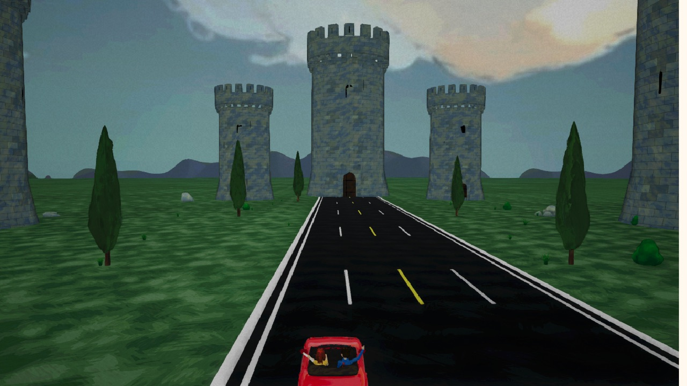


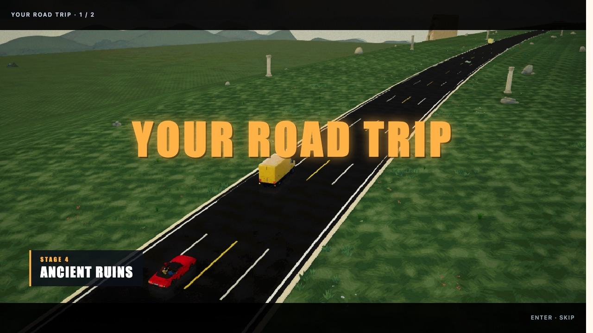

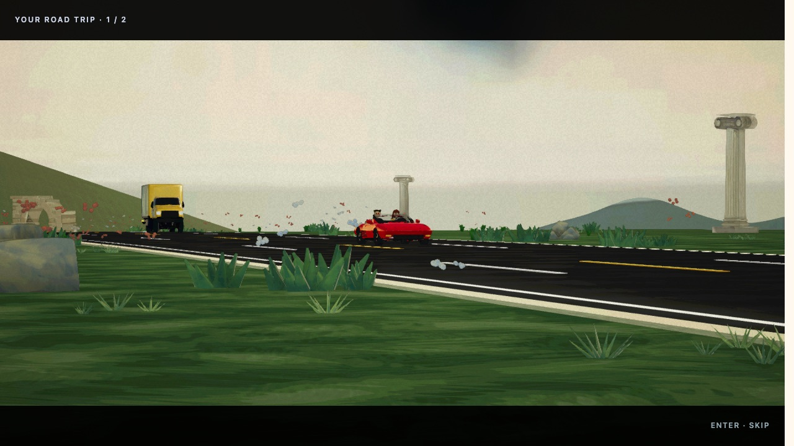
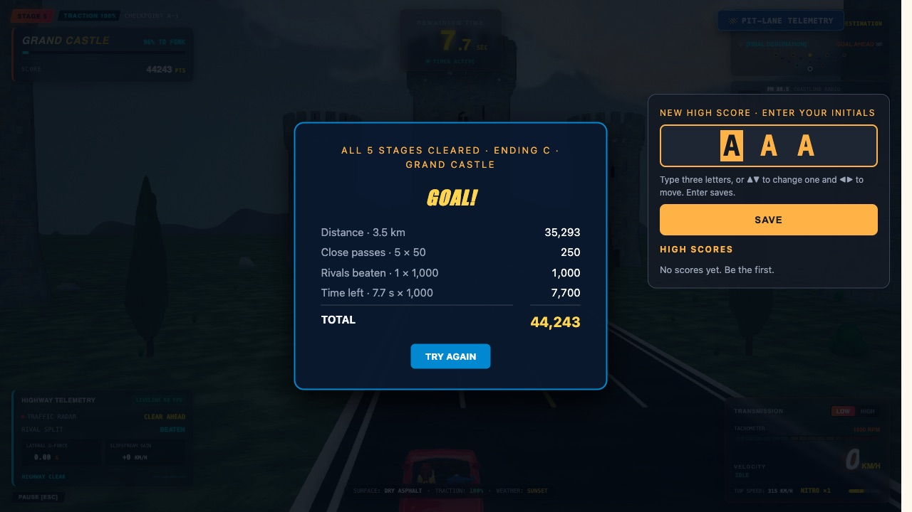
Turn 40 · Two racers online: a lobby, a challenge, and a duel the machine signals and decides
Results. The eighth slice of the kinetic-machine record is built. Two people in two browsers meet in a lobby, one challenges the other on a stage of their choosing, and they race it against each other over a direct connection between the two browsers. The server never carries the race; it introduces the two browsers to each other and then records the result both of them report.
- The lobby. The title card's DUELO ONLINE opens it. A racer goes online under a callsign, sees who else is there, picks one of the ten road stages and challenges; the other accepts or declines. It is Truco's lobby, rebuilt as Apex Run's own machines: presence while a tab is open, and challenges that expire after thirty seconds.
- The duel machine. Accepting opens a duel on the server. Its rows carry each browser's connection details to the other, so no separate signalling service is needed. During the race each browser reports its milestones — the grid, the start, the finish — and the machine pairs the two reports of each one. If the two agree, the finish is the result. If they disagree, the duel is marked disputed. If one racer goes quiet, the duel is abandoned and the quiet racer is named.
- The race over the wire. The arena's race now has an online mode. Each browser predicts the other car's input and rolls the race back when the real input arrives, using GGRS, which Turn 37 brought in. A milestone is reported only once both browsers' inputs for its frame have arrived, so the two reports can be compared.
- The end card. It shows the result as the machine recorded it: you won, you lost, a draw, disputed, or abandoned. The lobby is a click away.
- Checked. A browser test takes two guests through the lobby, the challenge and the race to both end cards and compares the two races' milestones: they match in Chromium and Firefox. WebKit is skipped because it needs a STUN server to connect. The machines have their own tests for admissions, races between commands, timeouts, the dispute and the result, both in the rules and against the stack's database.
- Where it stopped. Two browsers connect only on the same machine or the same network: playing across the internet needs a STUN server and, behind some routers, a TURN relay, which no one has set up. Checking scores by replaying the race on the server also stopped. The rules can run the engine, but a single step of a server machine has a budget of a million operations, and replaying one duel takes 2.6 million. The record has the numbers.
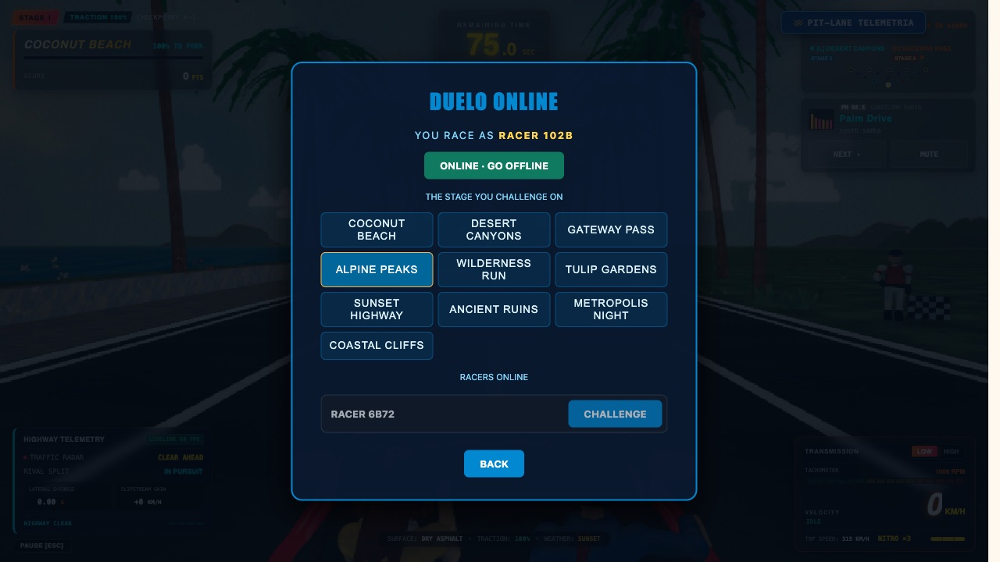


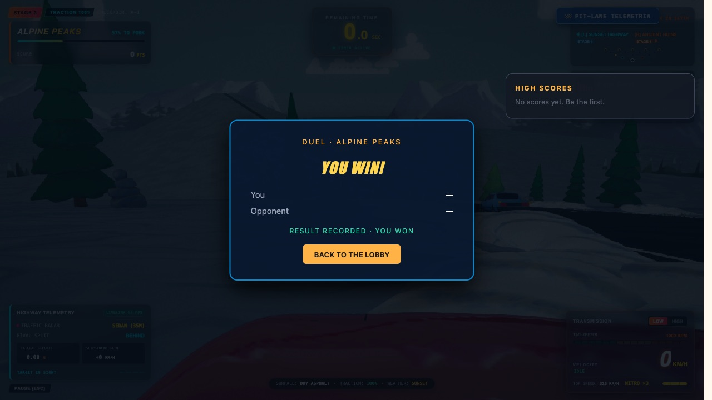

Turn 39 · The race is the arena's: a kinetic child, a run machine, and no page script
Results. The fourth slice of the kinetic-machine record is built. The page that raced inside a frame is gone: the arena itself hosts the race as a Cortex kinetic child, and a run machine of rows says what the page shows. Apex Run serves no script of its own.
- The child. The program declares the race once: its engine, its sound, its painter and its keys. The platform starts it on the arena and hands it the run row's seed, mode, keys and clock; it hands back each milestone and each menu press.
- The run machine. Title, race, pause, the end, the initials and the save are the run row's phases, folded from those milestones and presses on one seat. The stage name, fork labels, route matrix, rival card, the cards and the board are markup over that row. The stage shown now changes as the arch is passed, before the haze.
- On the canvas. The swoop's stage card, 3-2-1 and GO!, GOAL! and TIME OVER, the stage-clear card, the banners and the haze are drawn by the renderer's worker, looking as their CSS did.
- Initials. The race's own key mapper types them: arrows, letters, Backspace, Enter, or a gamepad's stick. Once the race ends no key reaches the car; a test drives both a key and a gamepad axis through the platform's wiring to prove it.
- Retired. The custom boot, the bridge, the initials helper, the showcase page and its script. The pit-lane rewind is the platform's own time-travel bar. The hot-seat duel is a title-card button now, since a query parameter cannot seed a row.
- Where it stopped. The rival card stays up through the hand-over, the online duel waits for its duel machine, and the radio lasts the tab. The record lists each.
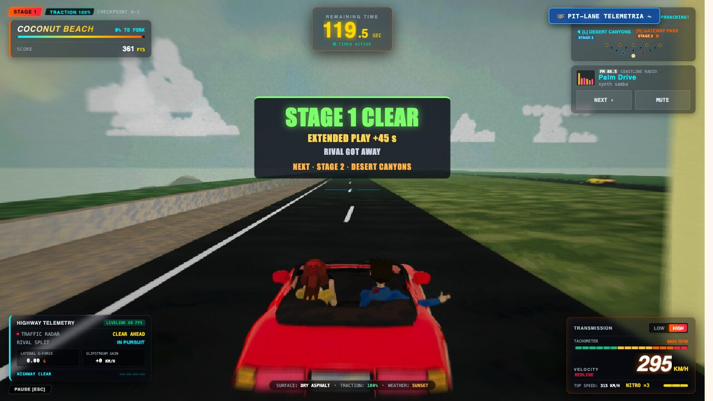
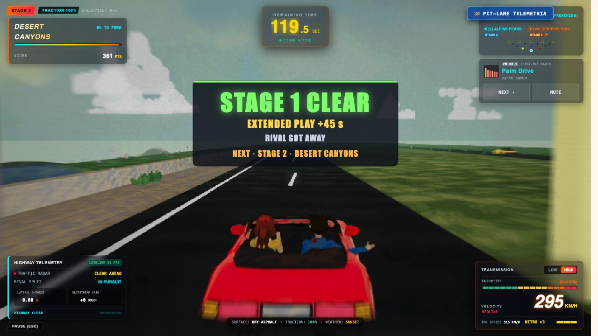
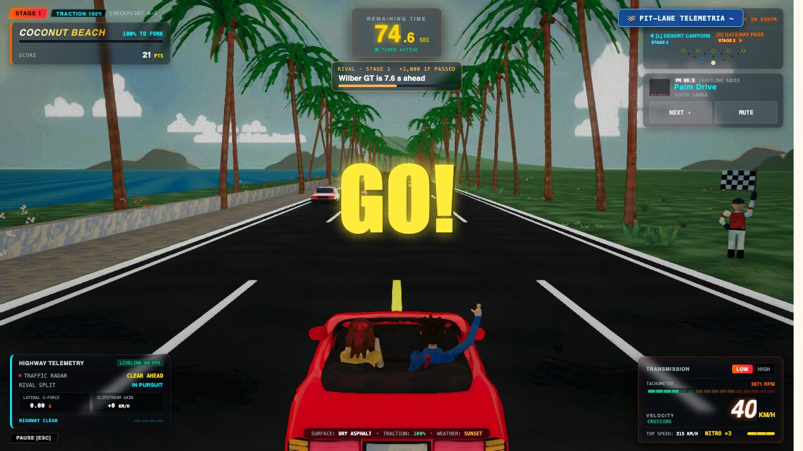
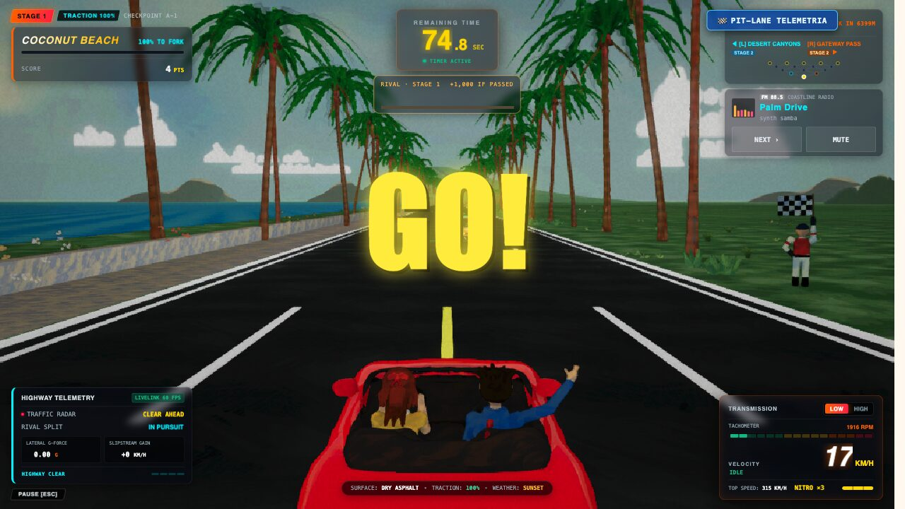
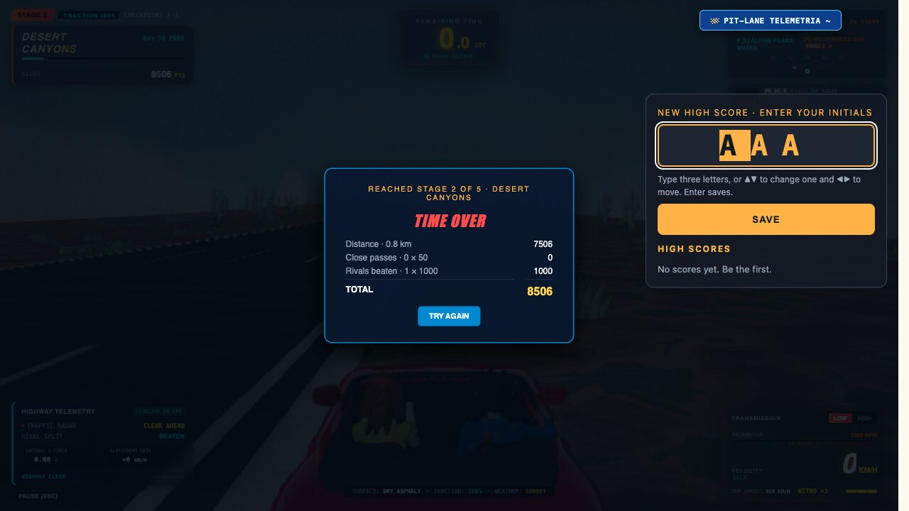
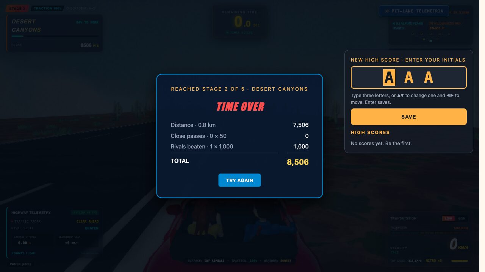
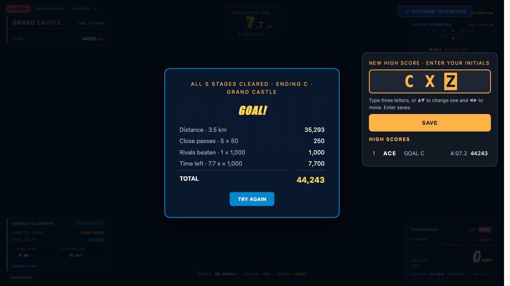
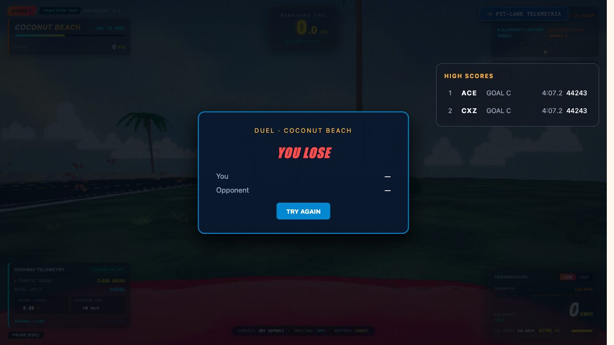
Turn 38 · Two planes: the sound in Jessie, milestones lifted out of the race, and the fast HUD in the worker
Results. The owner framed the page and the race as two planes: rows moved by IVM and drawn in HTML, one to many, over a race moved by rollback and drawn on canvas, few to few. The kinetic-machine record now decides how they meet, and three of its slices are built. The fourth, the run as a Cortex child that retires the custom boot, is designed and stopped.
- The record. The DOM plane composes the race; the race reaches rows only by lifting its milestones, each once its frame is confirmed and with the commands since the last, so a row is never rolled back and a row can always overrule the race. The HUD splits by refresh rate; audio is a Jessie role; initials are a form.
- The sound. The mix is a Jessie module the terminal hands one AudioContext, with worklets and other output devices taken off it first. A probe walks every value that context and its nodes expose and finds no page, network or storage. The noise bed now comes from a fixed seed.
- Milestones. The run lifts its start, each checkpoint, time over and the finish, minutes apart, never per frame, two bytes of commands a frame. Every recorded run loads back from its rows alone to the forward run's checksum at each milestone. Two peers over a lossy, late channel lift the same rows only once GGRS has both inputs, for which GGRS's wrapper now reports its confirmed frame.
- The fast HUD. Speed, revs, gauges, clock, score, radar and the rival's gap are drawn by the renderer's worker into canvases set where those digits sat, in the panel's own font, colour and glow; the panels stay the page's. At one fixed tick the HUD reads as before; the route matrix's card is a few pixels taller.
- Where it stopped. Pause becomes the run row's, the countdown and banners join the canvas, the stage shown changes at the checkpoint, and the bridge becomes the terminal's. The record lists it; the boot, the bridge, the initials helpers and the showcase are what stays plain JavaScript.
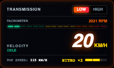
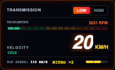
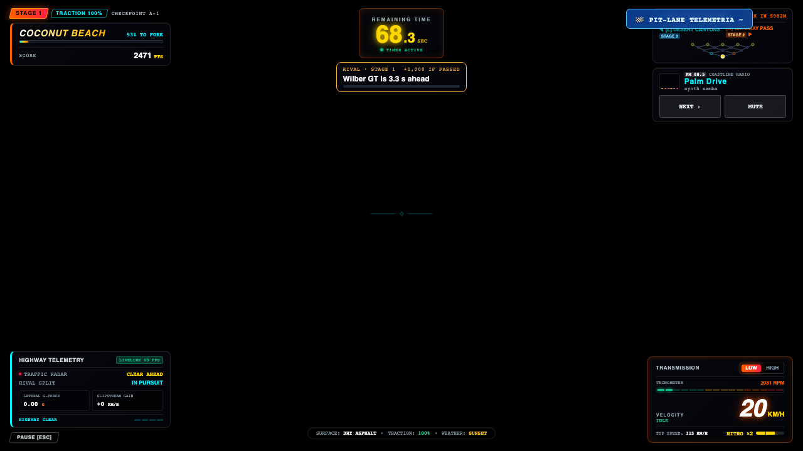
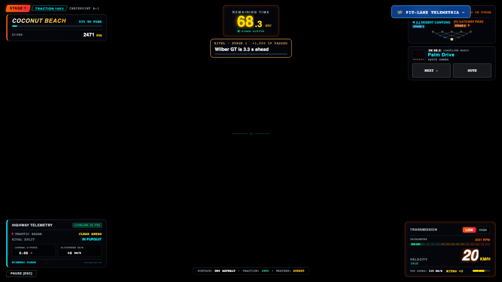
Turn 37 · Firefox paints the car, the worker reaches no upstream, and two windows race a duel
Results. The Firefox car, the presenter's residuals, a live fork, and then 1v1 racing as pronto's kinetic-machine record lays it out: the duel, two players on one keyboard, and two windows racing over a data channel with GGRS. The lobby that pairs two people across the internet stopped where the record says.
- The black car. Not Firefox's shader: the car's lacquer takes its diffuse light from the car probe, which reads its light back from the GPU after a capture, and a race that started before the read landed drew the paint black. Chromium's read happened to win. Each stage now lends the probe its sky's light until its own arrives, and a recapture swaps the new light in instead of emptying the old.
- The worker's residuals. Its module imports of this site arrive as a script's fetch, and both doors now answer those from static files only, never from the cluster, whose GETs may act. It no longer connects to
data:.'unsafe-eval'andblob:stay, argued in the record. The edge release, which packaged no unit at all, now packages the presenter. - A live fork. Driven through the shell at
/: left to Desert Canyons, right to Gateway Pass, and the castle to its goal, initials saved and the row arriving live on a second player's board. - The duel. Two cars on one stage, the first under the arch wins. Both race on the hero car's numbers; each player sees their own as the hero car. A recorded two-car duel joins the sync test.
- Against a peer. GGRS, GGPO's rollback in Rust, builds byte for byte the same into 214 KiB of Wasm. It predicts the other car, and when the real input lands late, loads that frame and races forward again. The peers compare checksums every ten frames. Two windows race over a real data channel in Chromium and Firefox. WebKit's do not connect without a STUN server, the same wall as two homes.
- Where it stopped. The lobby's offer and answer are rows a machine's fold reads, and the race lives in a page that only the plain-JavaScript boot can reach. Building the lobby now means more of that bridge; retiring the bridge first means the gaps the last turns listed. The record says so and what comes next.
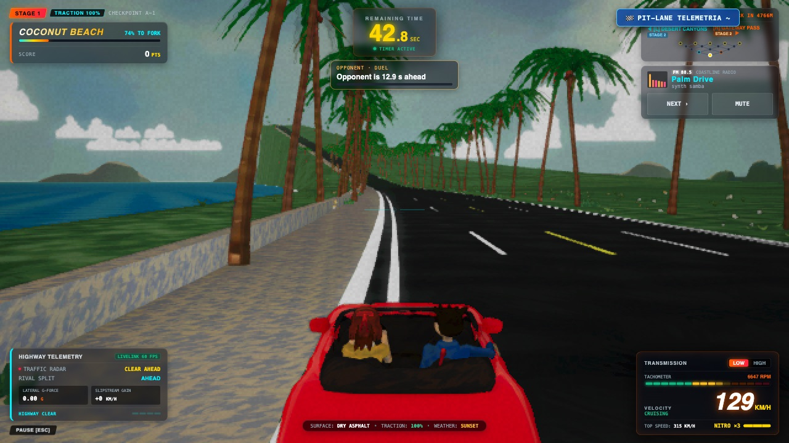
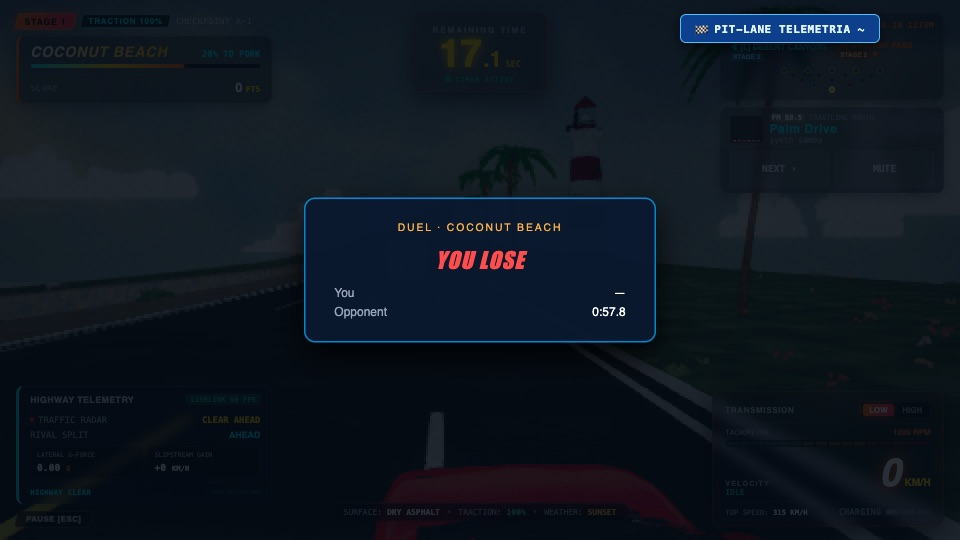
Turn 36 · The race steps in Jessie, and the game runs in Firefox and WebKit
Results. Three asks: try the game in Firefox and Safari's engine, give Jessie an import on Endo's own tools rather than one of ours, and move the simulation into it.
- Firefox and WebKit. Both refused to start the renderer's worker. They check a module worker's own imports against its
worker-src, which said'none'. It now says'self'; a nested worker stays impossible because the worker'sWorkeris deleted. Every escape probe holds in both, and the boot gate passes in all three engines. Firefox draws with WebGPU in the worker but paints the car bodies black; WebKit has no WebGPU on this Mac (Safari's needs macOS 26) and draws with WebGL2. Playwright's builds are not shipping Safari or Firefox. - Jessie import. An engine is a graph of Jessie modules that import each other by relative path. When the app is generated, Endo's ModuleSource precompiles each one; in the page, SES's own module system links them in one cage, endowed with nothing. Nothing new ships to the browser. The link refuses
import(),import.meta, packages, URLs, paths out of the app and any module reaching a denied name. - The race in the cage. The simulation, its PRNG and the stage layout are that graph. The sync test now runs on the caged engine, and each recorded run ends exactly where the plain module does. A step costs about 110 µs against 45 µs, under a hundredth of a frame. Initials, saving a score and the live board pass as before.
- Still plain JavaScript. The boot, the bridge, the HUD, audio and the initials editor: what the record keeps for the kinetic machine the 1v1 race will need.
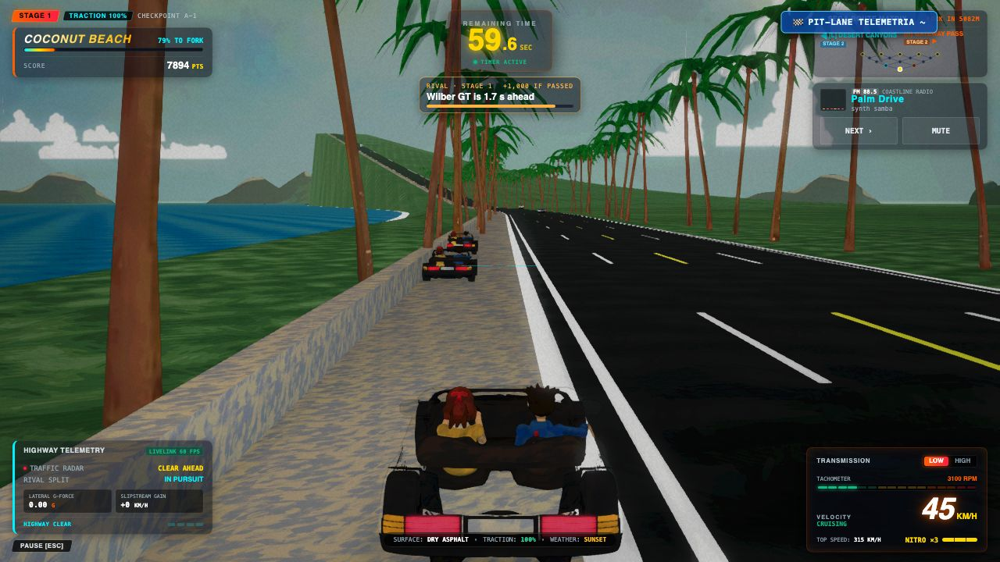
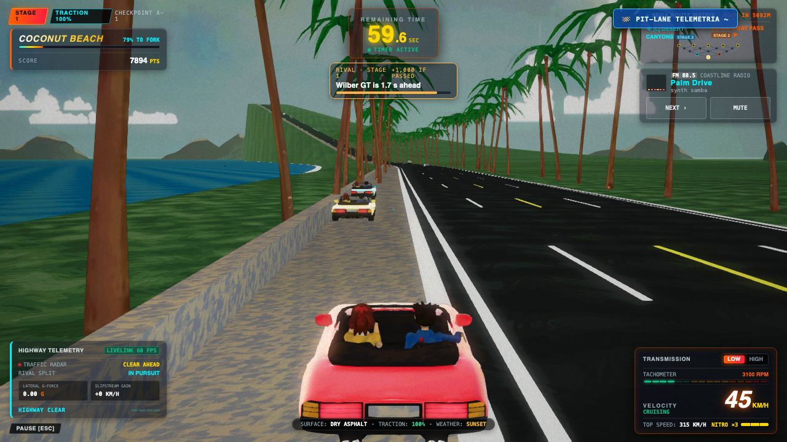
Turn 35 · The renderer paints in a worker that can do nothing else, and the rollback is tested every frame
Results. The owner asked that nothing in the game run as plain JavaScript beside the page: Jessie where pronto can check it, and state that only machines own. Babylon cannot run under SES (it writes onto Array.prototype.push), so the renderer went where it can only paint, and the rest stopped at a list of what the platform still lacks.
- The renderer is a presenter. Pronto now has a second role for a worker unit: an agent without a memo is a presenter. Its worker gets a canvas, a policy that refuses every connection but
blob:anddata:, and globals pruned to what drawing needs, and it raises nothing. Babylon and its loaders arrive fetched against their integrity; the art arrives through the seat while the race holds. Every escape the spike tried still fails, now against the terminal's own worker. - The same picture, steadier frames. Shots at ticks 360, 700 and 1100 differ from the old build by no more than the old build differs from itself. Over 20 s of the first stage, 17–23 frames took over 25 ms, against 194–219 when the page drew them.
- A bug only a worker could have. One run drew the road at a twentieth of its pixels: with no CSS size to read, Babylon scaled its own last drawing size at every adaptive step. The canvas is now fitted to its CSS size first, and a test holds it.
- The rollback, every frame. The kinetic host has GGPO's sync test: after every tick it rewinds eight frames and re-simulates them, and the first frame that disagrees fails by number. Three recorded runs cover the title, both sides of the first fork, the arch, a time over and an ending. The renderer is a view: it keeps drawing when the host seeks backwards.
- What stopped. The run as a cortex machine and the simulation as Jessie need six things the platform does not have yet, among them a HUD that updates 60 times a second and a machine for the run's phases. The record lists them; pronto's lint now names the five files still plain JavaScript here.
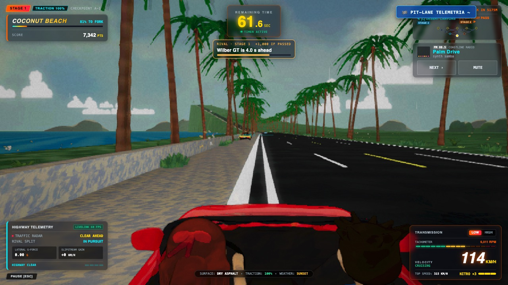
Turn 34 · The stage end runs into haze, a clean load, a gentler pull, and SuperTuxKart removed
Results. Three asks: the stage end that still drove into the void, the ghost car while loading, and a camera pull that was a bit too much. Then a cleanup: everything left from SuperTuxKart was removed.
- The road runs on. A fork stage's road now continues 400 m past its end, with both branches at full divergence and the gore, edges, dashes and terrain beside them. A test drives 600 frames through a change of stage and fails any frame without road under the car and at least 250 m ahead. Over the last 160 m the world fades into haze: the fog thickens, and the painted sky, the distance and the clouds fade toward it. The next stage fades back in over its first 240 m, and the switch happens inside the haze.
- The freeze at the switch. It was 850 ms. Now one frame of 67–117 ms remains, inside full haze, and the frames after it run at 17–33 ms. Five changes got it there:
- The next stages' clouds are painted a few rows a frame while the current stage is driven.
- One environment texture takes each stage's sky, and the post-process keeps its own image settings, so the switch no longer marks every material dirty.
- Traffic cars share each type's materials and are pooled per slot and type, built one a frame ahead.
- The verge's models and scatter are built one job a frame after the switch.
- No ghost car. The game is hidden behind
APEX RUN · LOADINGuntil its first frame is drawn with the title card up, and only then fades in. - A gentler pull. At a landmark the camera now moves 7.8 m back and 3.9 m up, and swings 2.7 m out. The lens widens 0.094 rad and the aim turns 47% of the way to the landmark. That is about a fifth less than before, over the same length.
- SuperTuxKart removed.
- The item system: item boxes, the fire input, zipper, bowling balls, bananas, the parachute and kart rank, with their telemetry, preset, sound cues and renderer pools.
- The kart game's Match and Kart state. Its fields are retired in place, as LapRecord's were.
- The referee and session_control handlers, with their flows and checks.
- The old track aliases and an unused character.
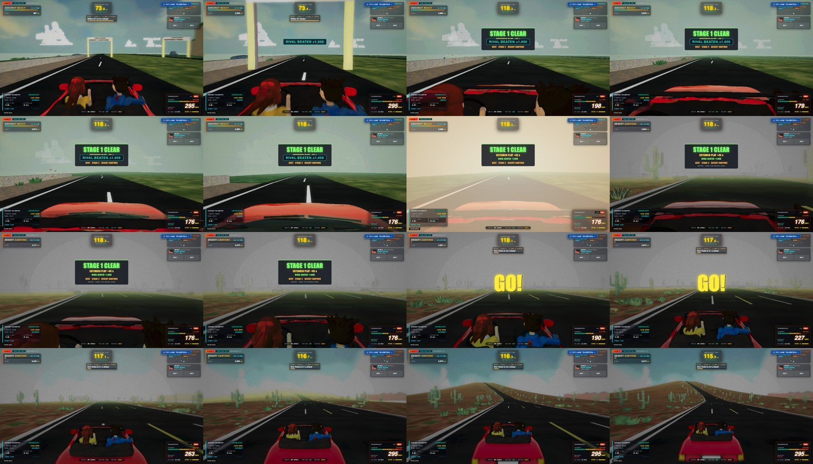
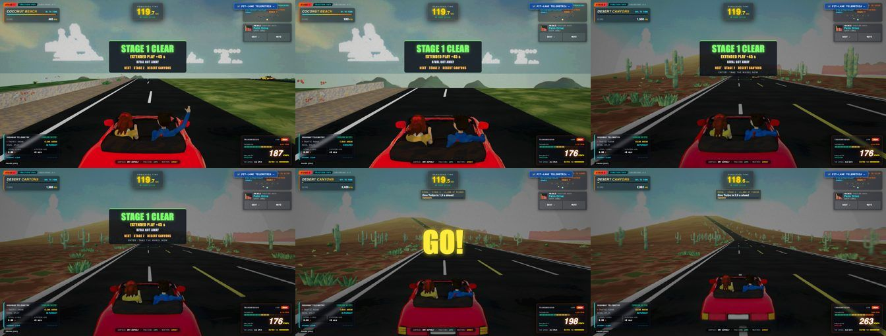
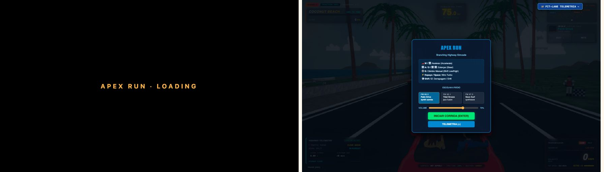
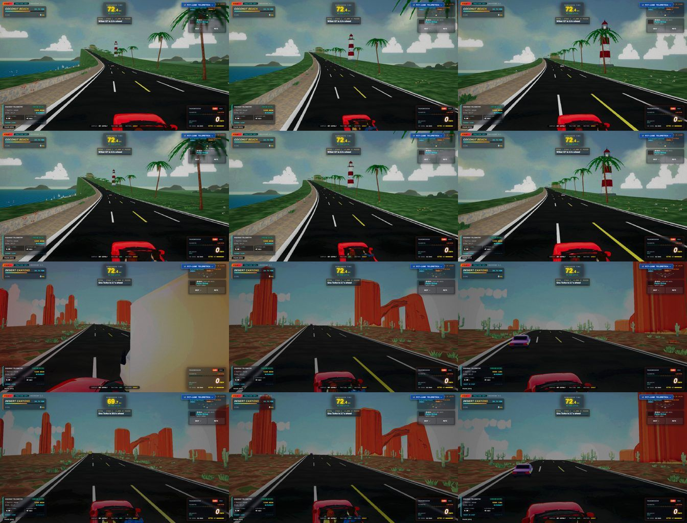
Turn 33 · Ghibli gouache, a hero landmark for every stage, and the boy holds the door
Results. Three asks: the boy's resting arm, the landmarks and their camera moment, and painted sprites for distant props.
- The arm holds the door. Between waves, the boy's outer arm is its own rider node. The elbow rests on the door top, the forearm lies along it, and the hand grips the outer edge with the fingers curled over the outside, inside the car's body line. The waving arm swaps in only while the sim's wave timer runs, so the nitro wave is unchanged.
- A hero landmark per stage. The camera trick was still there, but it landed on whichever mesa, cliff or windmill came first, often at the start. It peaked as the landmark passed beside the car, out of the frame. Now every stage has one landmark of its own, each a painted model placed once where the camera's moment frames it: the lighthouse, the desert's rock arch, the Tuscan and alpine chapels, the great tree and great windmill, the lone butte, the aqueduct, the spire, the headland arch, the marina's clock tower, the oasis's kasbah, the castle's keep, a single colosseum and the airship hangar. The new models are SDF solids (
assets/tools/props/landmarks.py), baked painted like the other big props. - The camera turns to it. The pull now builds from 420 m out and is full from 260 m to 90 m, while the landmark is still ahead in the frame. For a hero landmark the aim also turns 45% of the way toward it. The rarer set-piece moments remain, but none come in the first 400 m.
- Painted sprites, tried and not adopted. The prototype painted eight azimuths per model with SDXL at full strength and cut each out as a card. Past 24–40 m the cards crossfade by azimuth and dissolve into the 3D model nearer. At chase distance the palms read the same as the baked models, and the buttes came out lighter and flatter, unlit by the stage. They were not clearly closer to the concepts, so the prototype is kept on the local branch
proto/t33-painted-sprites.
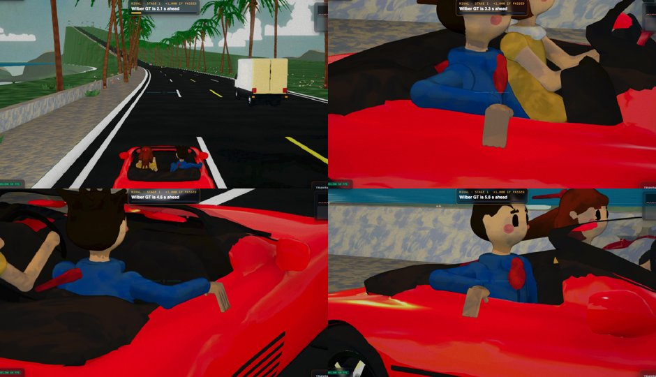
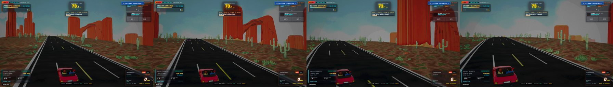
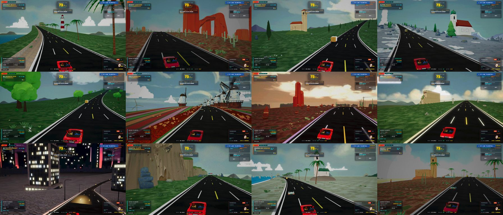
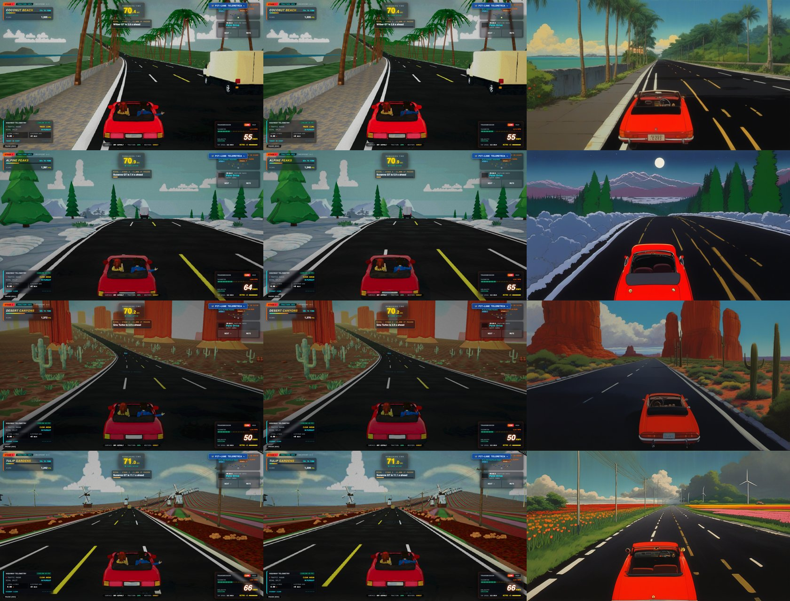
Gates. sayt lint, sayt test (227 tests) and sayt integrate pass on both commits. 60 fps at 1920×1080 at DPR 2 on eight stages: p99 17.6–17.7 ms, resolution scale 0.5–0.56. Open: the headland arch is the same grey as the cliffs behind it. The 150 m spire's top leaves the frame at its moment. The great tree is the broadleaf model scaled up, so it reads low-poly close by.
Turn 32 · Ghibli gouache, painted surfaces baked onto the props
Results. Colour was done; what still separated the frame from the concepts was surface. The props were smooth, flat-shaded models where the concepts' are painted.
- A baker. The new tool in
assets/tools/ghibli/bakerenders a model from five views and repaints each view as gouache with SDXL. It then projects the paintings back onto the model as one painted texture per level of detail. It carries only what each painting adds to its render, the brushwork and some warm and cool shifts, over the model's own colour. Taking the paintings' colours whole had produced a patchwork, and a palm trunk turned green. - Baked. The desert's buttes and the palms went first, then the firs, cypress, broadleaf trees, sea stacks, column and broken arch. The castle, colosseum and hangar already carry pack textures and keep them. On a painted surface the toon light only modulates, with no extra strokes laid over it.
- A poppy carpet. The tulip road's verge is a painted flower carpet, so it reads as a mass at speed.
- Smaller fixes. The power line has its wires. Gateway Pass's cypress avenue stands back from the road, and the gateway's limestone no longer reads mauve. The sunset road's red earth is tinted cooler.
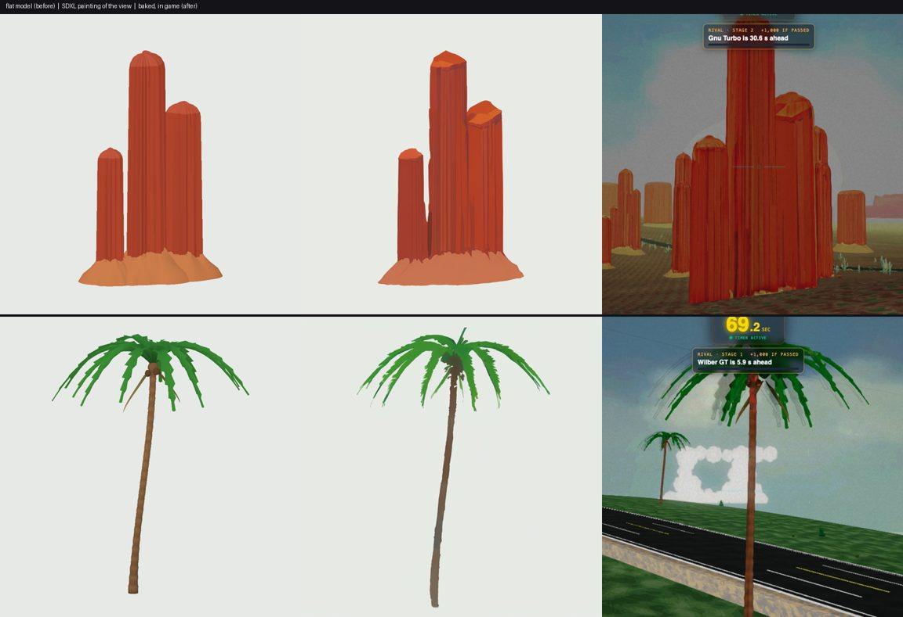
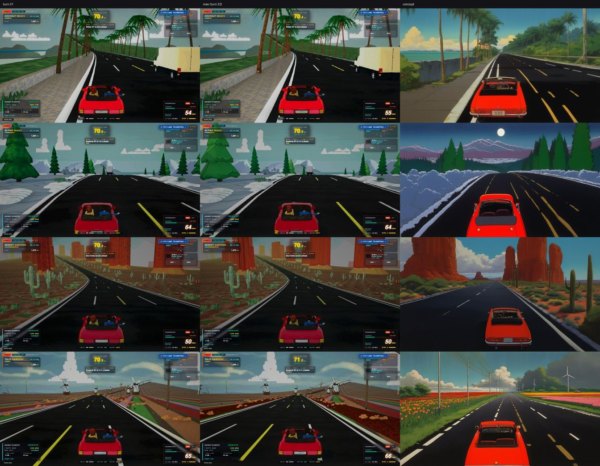
Gates. sayt lint, sayt test and sayt integrate pass on every commit. 60 fps at 1920×1080 at DPR 2 on eight stages after each slice, painted textures included: p99 17.5–17.7 ms, resolution scale 0.5–0.56. Open: the painted surfaces are subtle at driving distance, a grain of brushwork rather than the concepts' painted forms; SDXL at a strength that keeps the silhouette paints smooth. Gateway Pass's land measures 0.18, up from 0.11 but short of 0.27. The sunset earth's saturation barely moved (0.53). The arch keeps the stage's violet dusk.
Turn 31 · Ghibli gouache, colour by measurement and a painted tulip field
Results. All fifteen stages were measured region by region against the concept frames: mean luminance and saturation of the sky and the land, and the tones in the middle of the frame. The fixes went to the biggest gaps first:
- Colour held back. The style pass no longer pushes colour. The grass and forest floor are lighter, softer greens, the desert's red earth is softened, and the dark between leaf masses is lifted. On the four concept stages, land saturation now measures 0.34–0.45 against the concepts' 0.29–0.46; across all fifteen, most sit at 0.33–0.48, down from 0.45–0.62.
- Tulip Gardens as a painting. Dense orange and red poppies grow right up to the road. The field's rows are red, pink and coral, painted as soft masses between bands of leaf. A power line runs along the road, with slim white turbines far off beside the windmills.
- Promenade and saguaros. The coast's promenade is a painted mid-grey pavement, and the saguaros are a muted sage green.
- The darkest stages. The cypress and broadleaf foliage is lifted toward the concepts' lit greens.
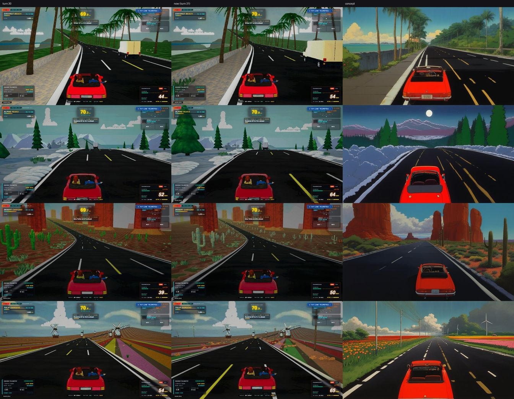
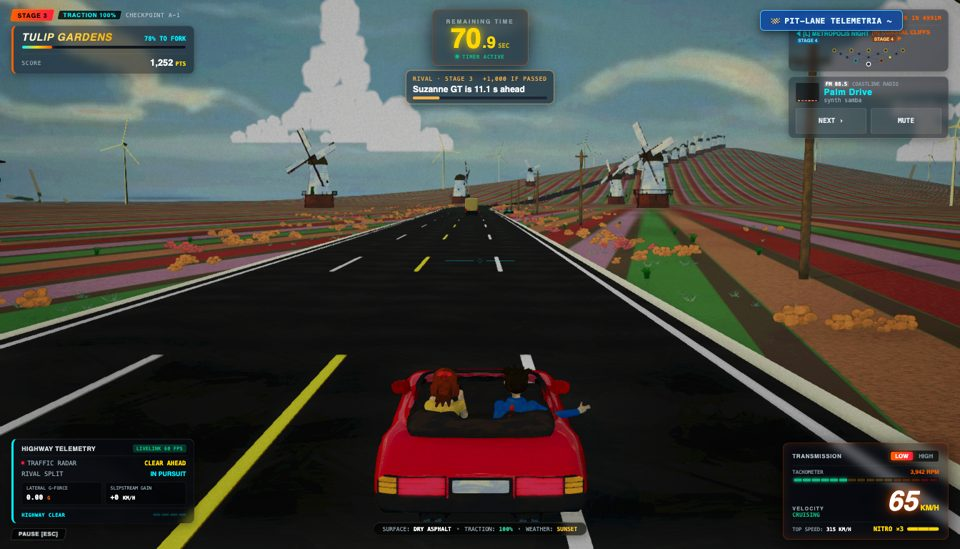
Gates. sayt lint, sayt test and sayt integrate pass on every commit. 60 fps at 1920×1080 at DPR 2 on six stages: p99 17.5–17.7 ms, resolution scale 0.5–0.56. Open: Gateway Pass's land still measures dark, its cypress avenue a wall of shade beside the road. The sunset road's red earth is still saturated. The poppies read as orange dots rather than a carpet at speed, and the power line has no wires. The gateway arch reads mauve.
Turn 30 · Ghibli gouache, true darks and every stage audited
Results. The owner said to keep iterating. This round fixed what Turn 29 left, then audited every stage for leftover cartoon-pack shapes. One commit per slice:
- A boot check in integrate. A broken
renderer.jshad passed integrate. Integrate now opens the game in a browser and fails unless the scene draws; a deliberate syntax error makes it fail with "FAIL boot". - True darks. The grey veil was the frame's lifted darks: our darkest tenth sat at twice the concepts' black level. The road is now charcoal under its yellow centre line and the shade is deeper.
- A red desert. The floor is red-orange earth again, with dense low green scrub. The saguaros, with their arms, stand along the road, and the near buttes frame it.
- A green coast. Coconut Beach's land side is green verge, and bushes and flowers grow in a bed at the foot of the sea wall.
- Alpine snow. The cotton-ball snow clumps are soft continuous banks along the road, under a soft painted range.
- Leaf masses. Canopies and palm crowns are painted as clustered leaf masses with dark gaps between them.
- Leftovers. The coast's sea stacks are rounded grey rock under grass caps, and the gateway is a stone arch instead of a purple slab.
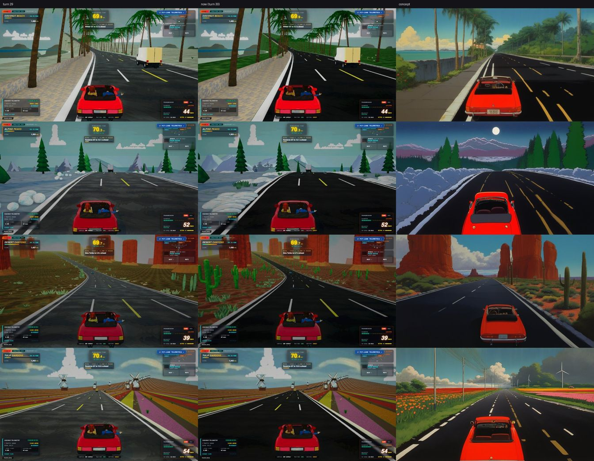
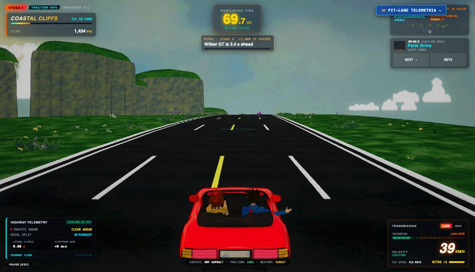
Gates. sayt lint, sayt test and sayt integrate, now with the boot check, pass on every commit. 60 fps at 1920×1080 at DPR 2 on five stages after each slice: p99 17.5–17.7 ms, resolution scale 0.5–0.56. Open: the promenade paving is still pale, and the desert saguaros a bright green. The land is still more saturated than the concepts', and the tulip and desert frames sit darker in the middle tones. The windmills and tulip rows still read as models.
Turn 29 · Ghibli gouache, toward the concept's clear afternoon
Results. The owner said to keep iterating to the limit. Each slice below was measured against the concept frames, comparing mean luminance and saturation per region of the screenshot.
- A clear painted afternoon. The golden-hour grade's orange highlights had turned every sky olive. The grade is now soft cream highlights over cool shade, colour barely pushed, low contrast and thinner haze. Every day sky is repainted from its photo's cloud layout as cream cumulus over a clear blue gradient; the sunset road keeps a warm one. The desert floor is a dark warm ochre with sage and the grass a muted green; the old palettes measured nearly twice the concepts' saturation.
- Buttes, not banded drums. The desert's buttes are re-sculpted as tall red rock, deeply fluted with no stripes, standing 70 m and more off the road. The near rocks are fewer and smaller and the alpine firs thinner, and the painted rings are taller, so the snow range and the far buttes now show.
- Strokes that read. The brush tile grows with distance, so a stroke keeps its size on screen instead of averaging to grey, and each stroke's warm or cool tone is stronger.
- Clouds with volume. Each card is shaded from a deep blue-grey belly to a cream sunlit top, with softer edges.
- Scrub and wildflowers. Verge bushes are clumps of leaning sprigs, grass tufts fans of blades and flowers patches of heads, all still low.
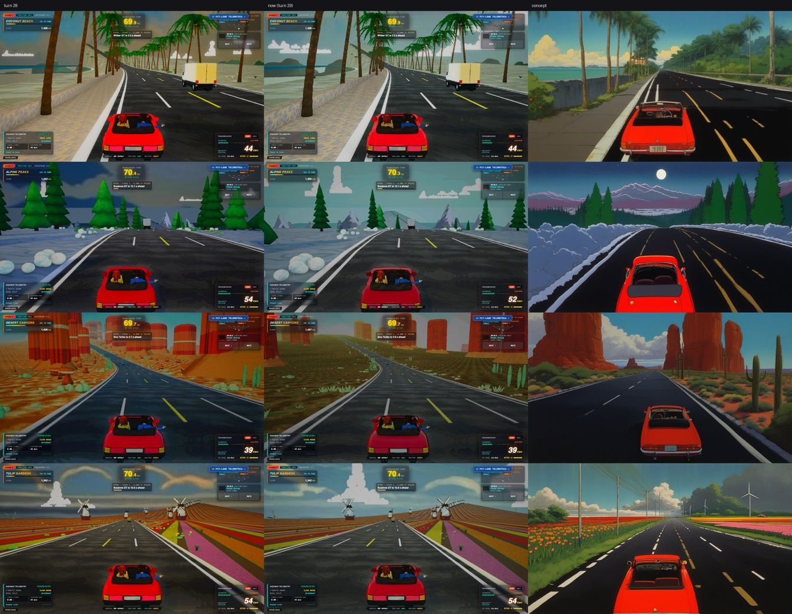
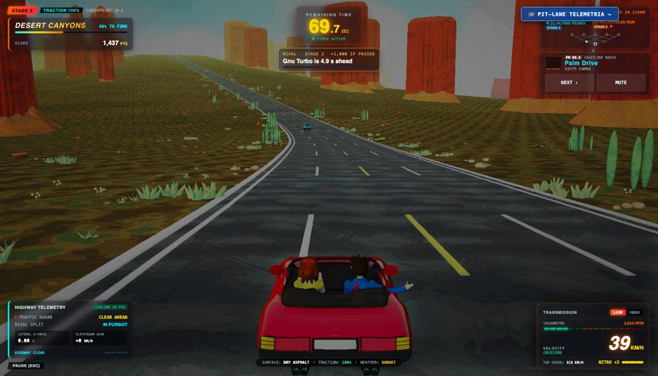
Gates. sayt lint, sayt test and sayt integrate pass on every commit. 60 fps at 1920×1080 at DPR 2 on five stages: p99 17.5–17.7 ms, resolution scale 0.5–0.56. Open: Coconut Beach's ground is still pale sand where the concept is green verge. The alpine snow mounds read as cotton balls, and its painted peaks are angular. The road is lighter than the concept's charcoal. The frame keeps a faint grey veil. The coast cliffs and the gateway arch are still cartoon solids.
Turn 28 · Ghibli gouache, the four levers
Results. After two quick fixes (the boy waves only at a moment that earns it; every cloud seen together has its own kind and shape), the owner said "go straight to building, 1 to 4". One commit per lever:
- Painted distance. Each stage has two painted rings around the camera, a far one 2.4 km out and a mid one 1.2 km out: coastal headlands over a palm line, red buttes, a snow range over a fir ridge, windmills over polder, a lit skyline, and so on for all fifteen stages. SDXL painted them as gouache, seamless all the way round. The mid ring sinks where the road runs and over the sea, so it never walls off the road or stands in the water. They replace the fractal ridges and the 3D snow cones.
- Brushwork on every model. One tile of gouache strokes is laid in world space on every prop, rider and the cars' trim: lighter strokes warm, darker ones cool. Each model is warmer on top and cooler at its foot, and its contour darkens softly. The cars' lacquer stays as it was.
- The concept's framing. The camera is further back on a longer lens, so the car sits small at the foot of the frame and the sky fills 35–40% of it. Speed, nitro, traffic, crests and landmarks still move it. The HUD is 80% size and half see-through; on a phone only the stage, time, rival and speed stay. An upright phone now shows the full width of the 16:9 frame.
- Cloud banks in depth. Fourteen painted cumulus stand in three banks, 1.3, 2.2 and 3.4 km out. They are fixed in the world, so the near bank slides past faster than the far one. They drift on the wind and come back round ahead once passed.
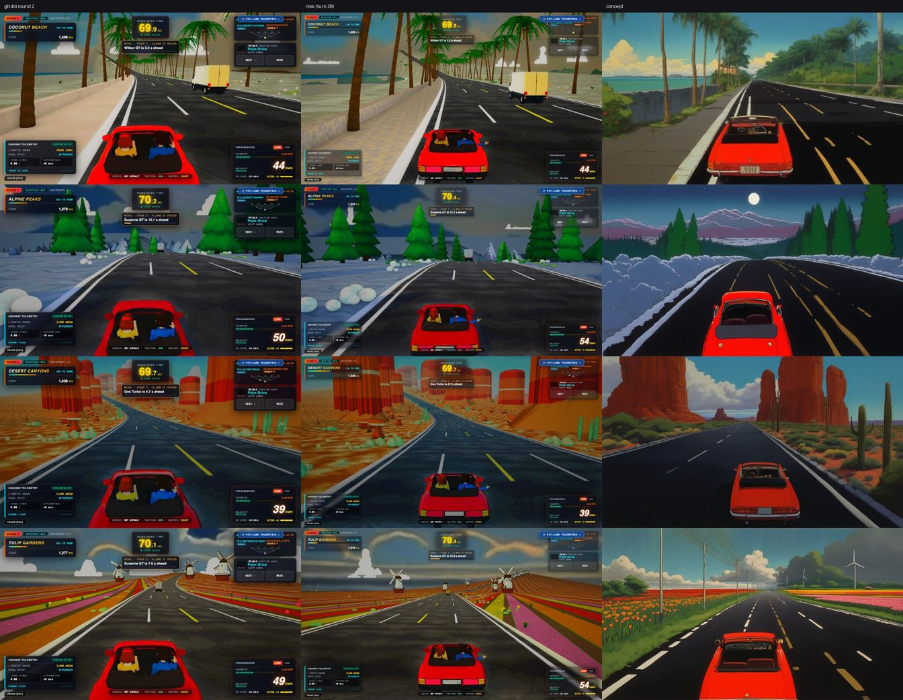
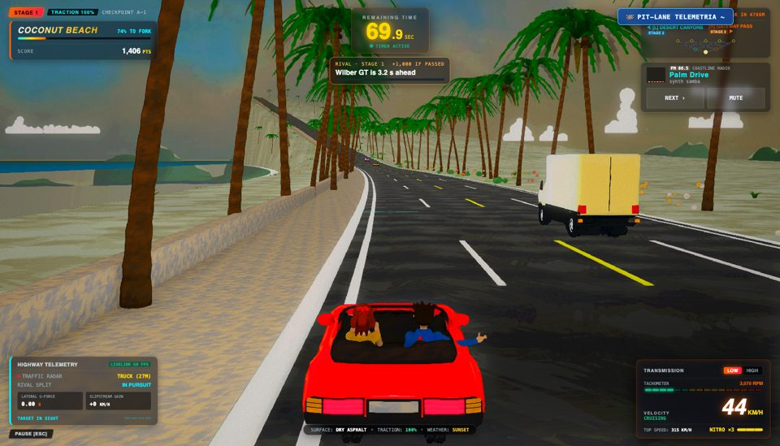
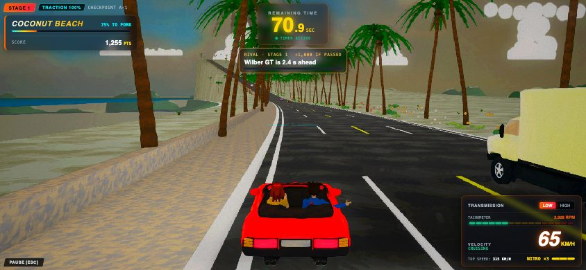
Gates. sayt lint, sayt test and sayt integrate pass on every commit. 60 fps at 1920×1080 at DPR 2 on four stages: p99 17.7 ms, resolution scale 0.5–0.56. Open: the frame still reads as a 3D cartoon rather than gouache. The painted distance is mostly hidden behind near trees and buttes. The strokes are subtle at driving distance. The cloud cards are flat white at their size. The sky and the grade are darker and muddier than the concept's clear afternoon.
Turn 27 · Ghibli gouache, round two
Results. The owner played round one ("overall looking nice, good visuals and style") and asked for five things; the coordinator's gap list added the rest.
- "the driver should be the girl" and "the people in the car deserve hero treatment as well". The riders are now sculpted models (
model/riders, built by the flagman's SDF toon pipeline), with faces: big low-set eyes, brows, a button nose, a mouth and rosy cheeks. The girl drives from the left seat with both hands on the wheel, in a yellow dress with a white collar, an auburn bob and a red ribbon. The boy rides beside her and waves, in a blue jacket with a red neckerchief. Her long hair and ribbon, his neckerchief and his arm move with the wind. - "the cloud in the first stage and in tulip all look the same and look like cut in half". The cumulus cards were uploaded upside down, flat base on top, so they looked sliced. They now draw right way up, and each stage paints its own seven.
- "too many bushes ... prevent us from seeing the tulips and the coconut trees". The verges are low and sparse, and Tulip Gardens has no bushes before its field.
- "a strange vertical line that stays flashing". This was the sky dome's seam: the sky texture coordinate jumped from 1 to 0 across one pixel column, so that column flashed. The dome now has no seam.
- Painted-world props. The desert buttes are fluted spires, the palms tall and slender with drooping fronds, the firs layered in deep green.
- Bright painted ground. Eight ground textures are painted from palettes: orange desert earth, pale coastal ground, bright greens. The road is a dark painted wash with a yellow centre line.
- Coconut Beach runs beside a promenade and a low sea wall, as in the concept.
- Window resize. Resizing no longer blacks out the frame.
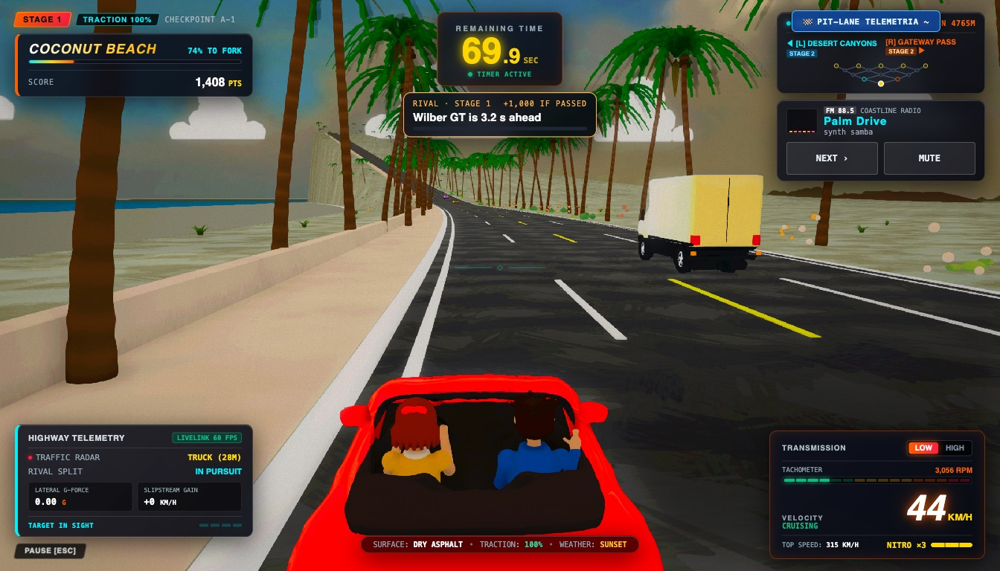
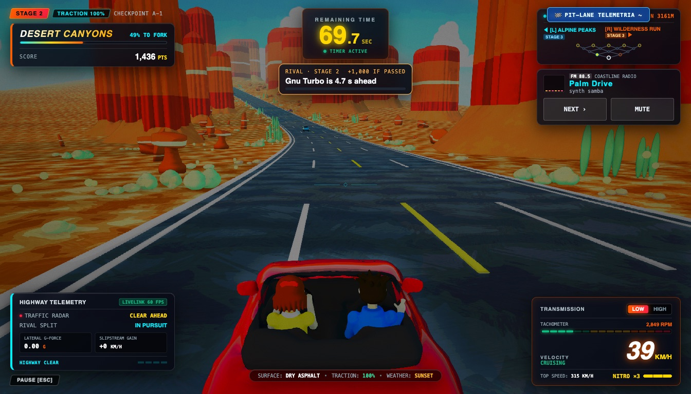
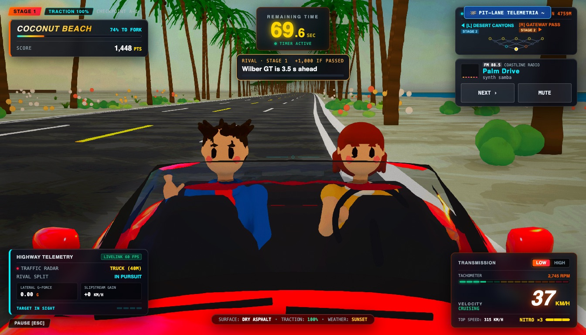
Gates. sayt lint, sayt test and sayt integrate pass. 60 fps at 1920×1080 on four stages, with the resolution scale held at 0.5–0.56. Open: the mesas and cliffs are still smooth, unbrushed solids; little of the sky shows at desert climbs; the stage-change hold.
Turn 26 · Ghibli gouache
Results. On its own branch (feat/apex-ghibli; the model railway stays on feat/apex-outrun), the owner's second pick: the world as a Kazuo Oga background driven through on a painted afternoon. A first pass that only repainted the ground and dropped the lens left the owner unable to tell it from the railway ("the changes are too incremental"), so every slice after it moved the whole frame:
- Painted everywhere. Foliage as warm and cool leaf masses, every other surface with a soft brush mottle, three soft painted steps of light; the frame gouache on paper, gently quantised over a paper grain, the ink thinned to a soft edge. No blur at all ("for ghibli, remove the blur altogether").
- Lush verges. Lobed bushes up to 2.4 m in two greens banked against the road, grass mounds and flowers dotting grass and bush faces; dry stages grow sage and ochre bushes with cacti.
- Oga skies. Every dome repainted as gouache with towering cumulus; the night city's as painted stars over its skyline.
- A painted afternoon. The sun turns behind the viewer and to the left, held high enough to light the faces ahead; the air is clear and the light high-key.
- Two characters. A boy in a blue jacket with a red neckerchief streaming back, a girl in a yellow dress with auburn hair blowing back, waving; scarf, hair and wave swing on the wind time.
- Gouache ground. Grass, cobble, beach sand, snow and canyon rock repainted; six sets whose repaint came out as blobs or camouflage keep their cartoon textures.
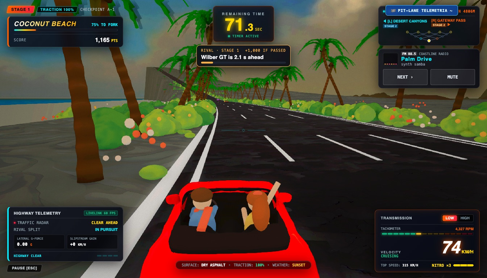
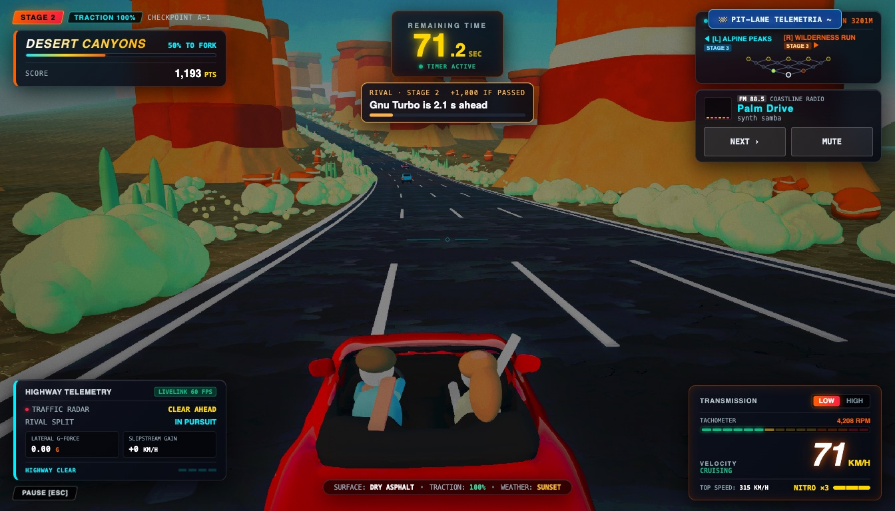
Gates. sayt lint, sayt test and sayt integrate pass; 60 fps at 1920×1080 on four stages with the resolution held at 0.5–0.56. Open: the mesas, palms and rocks are still cartoon models; the skies show little from the chase camera; the stage-change hold.
Turn 25 · Model railway, settled
Results. The owner found the game "a nice game with a nice identity", with one complaint: the macro lens took half of the screen. It now keeps the car and the road sharp to about 60 m (90 m flat out), softens only the ground right under the lens and the distance, fully by about 220 m, at a blur of 0.8% of the frame's height, where it was 1.4%. The roadside scatter reads sharp again; the far mesas and peaks keep the miniature's soft depth.
Along the way, this turn also settled the feel the owner raised:
- A planted car. The wheels stay on the road while the body pitches and rolls a road car's degree on sports-car dampers, as a raycast vehicle's sprung mass does.
- Nitro tails off. Its speed bleeds away over a second and a half, its flame thins over half a second, and the grass brakes a car hard over a second rather than in a frame.
- The hood camera starts drawing in at 90 m and lets go over several seconds.
- The start looks back over 400 m of road, land and scenery, and the tulips grow right up to the asphalt's edge.
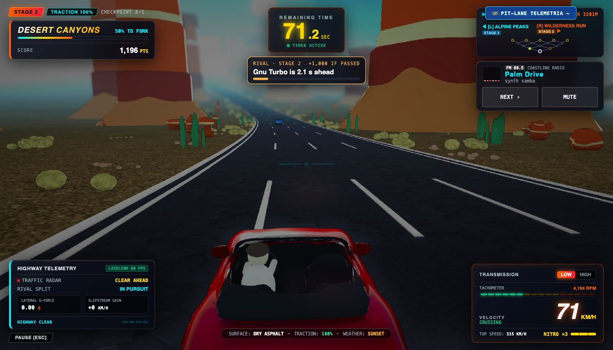
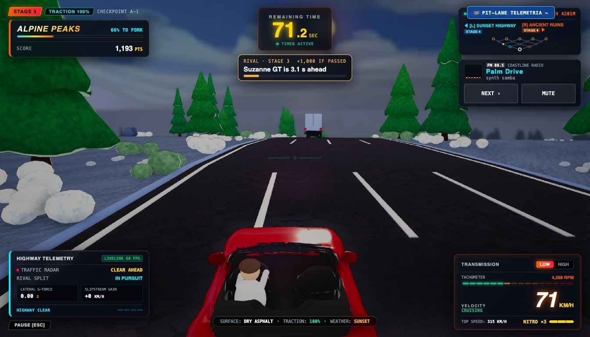
Gates. sayt lint, sayt test and sayt integrate pass. Open: the stage-change hold (about 300 ms while the next stage builds in one frame). Next: the Ghibli gouache direction, which the owner feels is closer to the spirit they had in mind.
Turn 24 · Model railway, pushed
Results. Beside the concept, the owner could not tell the first railway build from the game before it. The verdict was why: the lens was gentle, the grain too fine to see, the verges bare, the car no model and the trees the same shapes. Five slices, each held to 60 fps at 1920×1080 on a Retina Mac mini:
- A macro lens. Only the car and the lane lines just ahead stay sharp; past 25 m (38 m flat out) everything goes soft, with a blur about 1.4% of the frame's height.
- Model cars. The paint, chrome, rims and glass are lacquer, lit as themselves rather than banded: clear-coated paint and mirror chrome. A figure sits at every car's wheel.
- Crowded verges. Each stage scatters its own foam clumps, grass mounds, plaster stones, shells, snowy shrubs, bloom clumps and cactus stems in clusters by the road, drawn as thin instances in 300 m chunks near the camera.
- Grain you can see. The ground tiles every 9 m and comes in broad lighter and darker patches. Beach sand and cobble were repainted and kept.
- Lumpy foam trees. Every tree and shrub canopy was rebuilt with noise lumps along its skin.
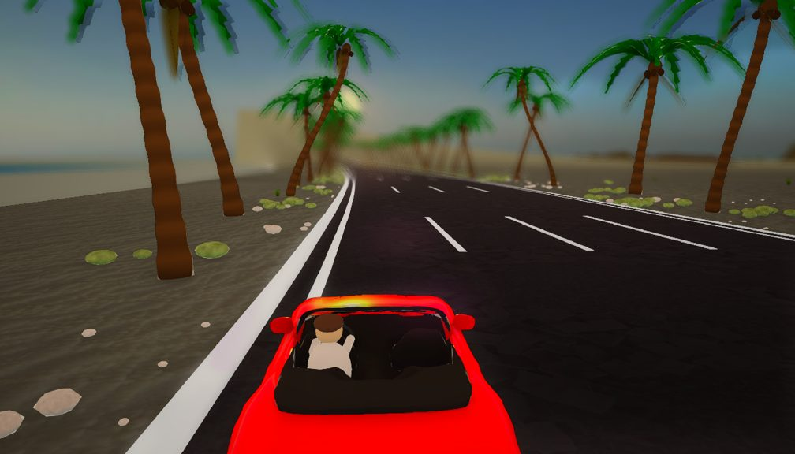
Still short of the concept. The props are cartoon models, not hobby ones; the scatter is sparser and simpler than the concept's packed verges; the canopy lumps are subtle; and the lens is kept milder than the concept's so the road ahead reads.
Turn 23 · Model railway
Results. Asked for a big change, the owner compared six directions, then pushed toy diorama and painted world, and chose the model railway, with Ghibli gouache next. It came first on cost: the owner's Mac mini already stutters, and the railway lives in textures and one lens pass.
- Scenery material. Eight ground sets repainted as layout material: static grass, clump-foam turf, ballast grit, plaster rock and walls, baking-soda snow, painted fine-grit road. Cobble, field soil and beach sand came out wrong and keep their cartoon sets.
- Foam and plaster. Canopies are clump foam and rocks painted plaster, by a world-space grain on their colour.
- A macro lens. A tilt-shift holds the car and the road ahead sharp and lets the near ground and the distance go soft, less at speed.
- Studio light. Softer bands, softer shadows, lifted shade, a pencil-weight ink.
Gates. sayt lint, sayt test and sayt integrate pass. At 1920×1080 on a Retina display, every stage holds 60 fps at full resolution with no long frames once its shaders have compiled. Next: Ghibli gouache.
Turn 22 · The animation pass
Results. The owner pointed at Snow White (1937) and the 1940s Superman shorts: smooth, eased motion. The car was a rigid block and the marshal's arm moved at one speed. Now:
- A sprung body. The car squats pulling away and dives under braking. Into a lane change it leans in for a moment (anticipation), rolls out of the move, swings back past level and settles. Nitro's kick stretches it a few percent and it springs back.
- In the simulation's step. The springs are sim state, advanced at 60 Hz, so replays and scrubs pose the body exactly as live; the renderer only interpolates between ticks.
- The marshal. Each move slows in and out: a wind-up before the lift, an overshoot overhead, a wave that swings up from still, a GO sweep that follows through, and a flag that trails the arm.
Gates. sayt lint, sayt test and sayt integrate pass.
Turn 21 · Rocks of three stones
Results. The owner found the rocks regular and paper-like, all of one shape. Each was a single model stretched to 1.4 m, so a flat slab stood up as a wall. Now:
- Three stones, fifteen shapes. Banded sandstone (six shapes) in the desert stages; grey-blue granite with lichen (five) in the mountains, on the coast and on the beach; pale limestone (four) at the ruins and the castle. Slabs, domed boulders, split blocks and tall stacks.
- Sized as a set. A stage's rocks scale together to average 1.4 m, so a slab stays knee-high and a stack stands twice a person's height.
- Off the road. The widest boulder at its largest placement is held clear of the asphalt; five stages moved their rocks out 0.4–1.1 m to make room.
Gates. sayt lint, sayt test and sayt integrate pass.
Turn 20 · Steering by the book, the hood beside traffic, readable gantries
Results. The owner could not correct a small drift on a straight and asked for the established technique rather than more tuning. Racing games build on the kinematic bicycle model, so the car now runs on it:
- Steering. The stick turns the wheels; the car yaws at v·tan(δ)/L and moves along its own heading. The wheels reach less as speed rises, as arcade racers do, so a tap at speed is a fine correction. Self-aligning torque straightens the car when the stick is released.
- The hood beside traffic. A car alongside takes the chase camera all the way onto the hood; nitro still pushes it back. The camera switch (the C key, the pill and the HUD button) is gone.
- Fork gantry. Each lane's board names its branch, white on cyan or orange; before, they were blank colour and flashed.
- Metropolis climbs. Towers, castle towers and the lighthouse stand on the lowest ground along the road as well as across it, so no underside shows going uphill.
Gates. sayt lint, sayt test and sayt integrate pass. Next: the varied rock set, then the animation pass.
Turn 19 · The cartoon pass
Results. The owner found the game still pixelated and photoreal, and asked for "nice, continuous round corners, perfect cartoonish feeling". A filter over photo inputs cannot round a corner, so the inputs changed:
- A crisp frame. It was drawn at half a Retina display's own resolution; anti-aliasing ran before the ink, leaving pixel-stair outlines; a sharpener pulled grain out of every photo. Now it is drawn at the display's density, anti-aliased after the ink, with no sharpener.
- Painted ground. SDXL repainted each photo texture set with its grain flattened first; grass moved to a cartoon meadow green.
- Cartoon models. Vegetation, rocks, the cactus, columns and poles are procedural cartoon geometry: puffy canopies, solid fronds, bevelled rock facets. Mesas and sea cliffs are closed solids, where the photoscans had been open shells. The cars are faired smooth with round arches and clean colour blocks.
- Baked light. Every new model carries ambient occlusion in its vertex colours, and the wind now moves model fronds, grass and leaves.
Gates: lint, test and integrate exit 0. Still to tune: the grass is vivid on some stages, the forest floor reads as camouflage, and the painted motifs repeat on large stretches.
Turn 18 · Peaks, the car on curves, the tulip field
Results. Three reports from the owner's play:
- Floating peaks. Alpine Peaks climbs to 232 m while the land 440 m out settles to the stage's lowest point, so a peak's flat base hung up to 56 m in the air on its downhill side. Large landforms now stand on the lowest ground under their footprint.
- The car in the snow. A car's height came from the centreline at its own z, but the road and ground run out along each point's right vector: off the centre on a climbing curve the car floated on one side and sank into the road or snow on the other. Heights now come from the surface under the car.
- Tulips as obstacles. The beds beside the road read as things to avoid. The field is now the ground: stripes of bloom to the horizon, behind a grass verge.
Gates: lint, test and integrate exit 0.
Turn 17 · Direction B: painted skies, ink, and a modelled world
Results. The owner picked direction B, a stylised look built down from offline renders (DESIGN.md, "Stylised AAA"):
- Skies and ink. Each stage's photo sky is repainted by SDXL as a painted dome. One pass inks silhouettes, bands the light and lifts the colour; the ink thins with distance as the fog does. The fog takes each painted sky's own horizon colour, so the land meets the sky without a seam.
- Seventeen new models. Night-city towers with lit windows, street lamps that glow, cypresses, windmills whose sails turn, tulip beds in single-colour stripes, broken arches, a lighthouse, sailboats, castle towers, the colosseum at its real 48 m, hangars, and a repainted traffic set that drives on its own axles.
- Procedural won twelve. Generation with Hunyuan3D-2 beat procedural only for the box truck; the arches came out intact and the colosseum melted at that scale.
- Metropolis Night has its city. At first the photo sky's street light floodlit every wall cream; at a third of its strength, the towers are dark with lit windows.
Gates: lint, test and integrate exit 0.
Turn 16 · The hero car, the camera on grades, the mix
Results. The player's and the rivals' car is the art pack's generated late-80s convertible: a Hunyuan3D-2 body from an SDXL reference, picked from seven shape candidates, its materials cut from its geometry, its wheels separate nodes that spin and steer. Each character wears its own paint; the brake lights and the nitro flame sit on the model's tail. The procedural car, its loft builder and the neural PBR module that only it used are gone.
The chase camera now rides the car's pitch, as the hood cam does: on climbs it had aimed at the road ahead, tilted up, and let the car slide down the frame onto the road. The radio leads the mix; the engine and wind sit under a third of it. Gates: lint, test and integrate exit 0.
Turn 15 · Nitro, hills, pop-in and the stage hand-over
Results. Four reports from the owner's play:
- Nitro. It burnt only while held, so a tap, the arcade way to fire a boost, gave a few frames and the tank read 100% again at once. A press now fires a whole 2.5 s burst; the tank holds three charges, shown as NITRO ×3; the rotating speed lines are gone.
- Hills. On a climb the chase camera sat 2.1 m over the road behind the car, 0.57 m over the roof, and the car read as sunk into the road. It now rides over the car or the road behind, whichever is higher.
- Pop-in. A 40 m mesa appeared at 520 m like a shrub. Detail and draw distances now grow with a prop's height, capped where the fog hides it.
- Stage end. One card from the arch: STAGE CLEAR, +45 s, the rival's result and the next stage. The haze hides the swap only for a moment, the wheel comes back on GO on a road clear of traffic, and the finish holds GOAL! before the results say all five stages were cleared.
Integrate found the art seed's uploads dropped on pooled connections rclone had closed; the seed now opens one per request. Gates: lint, test and integrate exit 0. A generated hero car is in progress.
Turn 14 · The art pack
Results. The owner asked for the limit, judged in the game. Every stage is now dressed by an art pack:
- Skies. A photographed HDR sky (CC0, Poly Haven) lights each stage and is drawn from the same cube, under ACES. Its sun comes back as the light that casts the shadows.
- Surfaces. Photoscanned road, sand, snow, forest floor, cobbles and grass.
- Props. Photoscanned rocks, mesas, cliffs, firs, broadleaf trees, shrubs and grass, plus generated palms, cacti and columns, at each prop kind's existing placements and collisions. Each placement is drawn at one of three levels of detail by distance; 60 fps on every stage played.
- Traffic. The generated 80s sedan, convertible, pickup and box truck, each in its own paint.
The bytes are not in git. The pack lives in a public bucket, named by sha256; at launch an assets container copies it into the blob service, refusing any file that does not hash to its name, and the game reads /blobs/. Git holds the manifest, the recipes and the tools (assets/README.md).
Bugs found while playing it:
- Black screen on Apple GPUs. Each map's own tiling cost a shader input and passed Apple's 16; tiling moved into the meshes' UVs.
- Black road. The photoscanned asphalt averages 0.014 linear; it is lifted to a worn grey.
- Black lines on sunless stages. A zero sun was normalised to NaN.
- Overexposure. The sky lit the pack's surfaces twice; the hemispheric fill now leaves them out.
Review fixes: a stage whose art fails to load now stops the game and says why, the sky's light file is awaited, and shadows are off when there is no sun. Not fixed: the palms' far detail level changes crown shape (the pack script draws its random values out of order; fixing it means regenerating the palms), and the traffic paint still has speckled patches from generation. Gates: lint, test and integrate exit 0.
Turn 13 · Hills, nitro and the gauge
Results. Three reports from the owner's play, each reproduced in the browser before it was fixed:
- Hills. The car sat level on every grade, so on Alpine Peaks its nose and tail sank into the road. Cars and traffic now ride the line through the road under both axles, pitched with it. The hood cam pitches with the car, so the hood holds its place in the frame on climbs and descents.
- The gauge. The panel read "NITRO READY" at any fuel over 10%. Held on an empty tank, nitro also refilled a sliver and burnt it every tick, so the HUD showed "BOOST ACTIVE!" while the car gained nothing. An emptied tank now locks until it refills to 25%. The panel is a bar with three states: NITRO, BOOST and CHARGING. A tick on the bar marks the unlock point.
- Nitro feel. Boost eases in. The camera lags back and drops, so the car surges away from it. The view widens three times more than before, the edge blur roughly triples, the flame is long and additive, and speed lines streak the edges.
Review found that a spin or a finished race while boosting left the effects on. This is fixed, and traffic now pitches on its own axles. Gates: lint, test and integrate exit 0. Studio seats and simplify were skipped for this fix-only turn.
Turn 12 · Babylon 9 and ambient occlusion
Results. The owner agreed to a newer Babylon. Apexrun moved from 7.54.3 to 9.31.0, pinned with integrity. The shared CSP admits both versions, so doom and supertux stay on 7.54.3 untouched. On 9.31.0 SSAO2 runs under WebGPU with the custom sky intact, so ambient occlusion is back on WebGPU through its own geometry buffer.
The upgrade's WebGL2 run exposed a turn-11 bug: the wind plugin's GLSL never declared its uniform, so its shader failed to compile on WebGL2. It is fixed.
Played on WebGPU (chase and hood) and forced WebGL2: no errors, about a 16.7 ms median frame. Gates: lint (all 13 apps the CSP touches), test and integrate exit 0.
Turn 11 · The owner's graphics packs
Results. All four packs the owner picked, on WebGPU and WebGL2:
- The field of view widens with speed (more on nitro), the screen edges blur above 200 km/h, and the camera shakes on the rumble strips.
- The haze warms toward the sun's colour as the camera faces it, flare ghosts trail along the sun's axis, and palm fronds glow when backlit.
- Fronds and grass sway in the wind, through a material plugin with GLSL and WGSL code.
- A reflection probe follows the car, so its paint reflects the sky, road and horizon (WebGPU only).
- Night stages light a soft headlight pool on the road ahead.
Not shipped:
- Ambient occlusion was tried again. Its geometry-buffer path throws on the first frame under WebGPU in Babylon 7.54.3.
- Screen-space reflections came out after the owner played: in the hood cam they flashed black blocks in front of the car.
About a 16.7 ms median frame on Coconut Beach. Gates: lint, test and integrate exit 0.
Open after turn 11
- Ambient occlusion waits on a newer Babylon (the owner agreed to try one), or on a sky that writes the prepass buffers.
- From the review:
- The horizon ridges keep the plain fog colour while the fog warms.
- The flare ghosts aren't corrected for aspect ratio.
- Frond shadows don't sway.
- The speed blur samples even at zero strength.
Turn 10 · The start and the checkpoints
Results. The owner found the non-racing moments weak: no real 3-2-1, no flag, an abrupt stage end, and an automatic start to the next stage. On the design canvas they chose:
- The start: the camera swoops from above the grid with the stage card showing. Big 3-2-1 numerals follow while a flag marshal waves the chequered flag, and he sweeps it down on GO.
- The stage end, with their change: an arch over each branch triggers EXTENDED PLAY +45, and the car then drives itself at cruising speed with the clock frozen. A haze hides the stage swap at the road's end. The car keeps driving itself for 2 s into the new stage, under its name card and "CLICK OR ENTER TO TAKE THE WHEEL", until a click or Enter takes over.
The blob shadows under the cars are gone, at the owner's request. Played embedded: racing, checkpoint, stage 2, racing, with no errors. Gates: lint, test and integrate exit 0.
Open after turn 10
- Two older pit-lane presets ("Uso de Itens", "Linha de Chegada") edit a copy of the state and have never worked. A new "Checkpoint" preset uses a real start option.
- The score ceiling doesn't count the distance covered while the clock is frozen at checkpoints. The current bound still covers a full run.
- From the seats:
- The race flow isn't yet in
ir.html's flows and acceptance. - A click during the approach to the arch is dropped; only a click after the swap takes the wheel.
- The HUD mixes Portuguese ("VAI!", the presets) with English.
- The new colours are literals, not tokens.
- The race flow isn't yet in
Turn 9 · WebGPU and modern lighting
Results. The owner asked for 2025-era graphics, with modern lighting on WebGPU. The game now runs on WebGPU where the browser offers it and on WebGL2 otherwise. The custom shaders (sky, CAS, a new god-ray pass) ship native WGSL, so WebGPU never fetches the unpinned glslang and twgsl converters. Each stage's own sky, captured into an environment map, lights clear-coated PBR car paint, glass and metals. Three cascades of sun shadows fall from palms, props and cars. The road carries screen-space reflections, and the sun throws shafts. A colour grade, MSAA and FXAA finish the frame. Played on an Apple GPU: zero WebGPU errors and about a 17 ms median frame at 1280×600. Gates: lint, test and integrate exit 0.
What it took
- The game calls
scene.render()from its own loop. WebGPU acquires and presents its drawing surface inbeginFrameandendFrame, so until each render was bracketed by those calls the WebGPU canvas stayed black. - About 16,000 prop instance nodes cost 39 ms of CPU a frame. As thin instances, one mesh per prop part, they cost 4 ms. The glow pass now redraws only what glows.
- Tried and dropped, recorded in
DESIGN.md:- Ambient occlusion turned the custom sky black.
- Screen-based motion blur smeared the player's car.
- Object-based motion blur and temporal AA overflowed Apple's 32-byte colour-attachment budget.
- The headlight and nitro point lights pushed shaders past 16 fragment inputs.
- A correction to earlier turns: the "half resolution" and 30 fps in their evidence partly came from a second copy of the game running in a background tab of the test browser and competing for the GPU.
Open after turn 9
- SSR and the god rays run after the default pipeline's grade, vignette and FXAA.
- Thin-instance buffers span the whole track, so props are never culled.
- Each kart has both a blob shadow and a cascaded shadow.
- Coconut Beach sits at the edge of the 16.7 ms budget.
- Everything was measured on one Apple desktop GPU, on both WebGPU and WebGL2; there is no phone evidence.
- From the seats:
- Metropolis Night's road nearly disappears into black now that the headlight light is gone.
- Alpine Peaks shows a faint coloured band on one mountain face.
- The player sees nothing while the renderer starts, and gets no words if WebGPU fails.
- The WGSL tests check text rather than compiling it.
- No acceptance row covers rendering or a frame budget.
Turn 8 · Fixes from play: the clone, floating bushes, traffic and solid palms
Results. The owner played turn 7 and found four problems, all fixed:
- A red "clone" stayed on the start grid. It was the hero mesh of a character no kart uses; only cars in the race are now drawn.
- Bushes floated over the sea. Scatter on the sea side was placed past the shoreline; land props now stop short of it.
- Traffic was stacked boxes with no wheels. Sedans, convertibles, pickups and trucks are now lofted bodies with glass, wheels and paired lamps.
- The car drove through palms. Props existed only in the renderer. One placement function now feeds both the renderer and the simulation, so solid props (trunks, rocks, cliffs, poles) crash the car, and the crash slides it back to the road's edge, as in Out Run.
Each fix has a regression test that fails without it. Gates: lint, test and integrate exit 0.
Not done this turn
- No code review or studio seats ran. The owner asked for the fixes during play, and each is guarded by a test.
Turn 7 · Generated scenery, direction A
Results. The owner compared three scenery directions on a design canvas against the Stitch frame and chose A, everything in procedural 3D: "I don't want nostalgia, I want something great". Everything is generated in the browser at stage load, with no downloaded art:
- a sky shader with sun-lit cirrus and cumulus, a horizon haze band and stars at night;
- three noise ridges a side, shaped per stage (hills, mesas, peaks, dunes, skyline, headlands) and coloured by aerial perspective;
- a drifting wave map and a foam line on the sea;
- ground detail in world space;
- hero palms with curved ringed trunks, 14 leaflet-cut fronds, coconuts and a dry skirt, at today's count;
- rocks, shrubs and grass on 13 stages.
A cliff wall that had covered half the screen on Coastal Cliffs since turn 2 now stands clear of the road. Every stage I drove held 60 fps at full resolution. Gates: lint, test (a new scenery check) and integrate exit 0.
Open after turn 7
- The clouds are still faint, and the sky near the sun washes toward cream rather than the deep Stitch blue.
- Older signature props (tulip fields, cliffs, mesas) are still box-built next to the new palms.
- Each palm is 31 instanced parts. Merging them per material would cut the instance count about 6×.
- The sea's ripples stretch about 2× along the road.
- From the seats: the tulip beds are flat coloured slabs; the Coastal Cliffs cliff is an untextured grey block; on Grand Castle and Metropolis Night the road and verge barely separate from the background; and the palms' trunk rings and coconuts aren't visible at play distance.
- The new maps are generated on the main thread, about 120 ms the first time a ground kind appears, instead of in the existing worker. One stage's look is also split between
STAGE_LOOKSandSCENERY. - No throwaway build (a three.js sandbox or a free palm model) set the quality bar before the procedural port. All evidence is desktop width in headless Chromium, which renders at half resolution; there is no phone evidence.
- Metropolis Night's status strip still reads "WEATHER: SUNSET".
Turn 6 · The car on the road, steady under steering
Results. The owner played and found two bugs: the car floated above the road, and every steer made it jump. Both came from how the renderer reads the road. It took each road segment's start point without interpolating, so the car and the camera stepped at every seam, each at a different moment. The camera also followed the sim's raw lane while the car was drawn interpolated between ticks, so the car lurched sideways against the camera on every tick. And the car's root sat 0.35 above the road, a leftover from the kart era. Now the car, the camera, traffic and items all read one interpolated road lookup (position, height and heading). The camera follows the car as drawn, and the car sits on the asphalt. Replayed with hard left-right steering: 0.0 sideways jump between the car and the camera across 200 frames. Gates: lint, test and integrate exit 0. The three new regression tests fail on the turn-5 renderer.
Open after turn 6
- The road lookup allocates a small object per call, about 20 to 40 per frame.
- The wheels-on-road test compares the car with the road lookup, not the wheel geometry. No test yet checks that traffic, balls, bananas, shadows or lights follow the road.
- Drift sparks sometimes draw as dark squares on the sand, which suggests a particle texture without alpha.
- The chase camera's height and distance are written in four places with nothing tying them together. The steepest stage climb now has about 3% headroom before it would block the sightline.
- All evidence is desktop width; the new camera heights have not been checked on a phone.
Turn 5 · The hero car, neural materials and adaptive resolution
Results. The box-built car is now a curved GT. Its body and cabin are lofted from rounded cross-sections. The tail has four round lamps in two pairs over a carbon grille, with twin titanium exhausts and a carbon diffuser, and the rear tyres are wider than the front. The neural PBR worker finally feeds the car's carbon and titanium materials as well as the road's asphalt normal map. Adaptive resolution aims for 60 fps, or the display's own rate when it is slower, which is measured once from a bare animation loop at start-up. It ignores pauses and scrubbed history, backs off after a failed climb, and sharpens harder as it scales down. Gates: lint, test and integrate exit 0. Mutation runs confirm that the stall guard and the history guard each have a test that fails without them.
What changed
- Design canvas (hero car) with three rear views: a curved GT, an 80s wedge and the box-built car. Chosen while the owner was away: the curved GT.
renderer.js:_loftbuilds a closed, capped body through squircle stations. The carbon and titanium materials are shared by every car; only the paint differs.- Adaptive resolution measures the interval between presented frames against a calibrated refresh rate. Review rounds replaced two earlier designs. Timing only the render call missed GPU stalls. Taking the fastest interval seen as the refresh rate never stepped down on a GPU that was slow from its first frame.
- Review fixes: nitro flames come from the twin exhausts; one stutter no longer drops resolution; a frame stamped at time 0 no longer reads as "no previous frame"; the controller and sharpening tests now fail when the code they guard is removed.
Open after turn 5
- The 3D form was shaped in code from two flat rear sketches; no 3D draft or side view was drawn first.
- From the chase camera, the grille and exhausts sit behind the status strip and show only a few pixels of their textures. The tyres are still plain cylinders.
- Every car rebuilds the same two lofts, double-sided. Sharing the geometry and going single-sided needs the face winding checked in a browser first.
- Single-step and play renders in the shared game loop still count as frames for the controller; the fix belongs in omnishell's
kinetic.js. - Calibration happens once. A display that changes rate mid-race, such as battery saver switching on, is not re-measured. Babylon's SceneOptimizer was not compared.
- There is no phone evidence of the scaler at work, and the screenshots don't record the scale they were taken at.
- Top-right HUD chips overlap the distance readout (from before this turn).
Turn 4 · Endings, the rival and the shared high-score table
Results. A run now ends on a card that says how. At a destination it reads GOAL! with the ending's letter; when the clock runs out it reads TIME OVER with the stage reached. Both show the score line by line: distance, close passes, rivals beaten and, on a goal, the time left. Each stage places one named rival ahead of the player, worth +1,000 if passed before the checkpoint. A run that ranks in the shared top ten asks for three arcade initials. The saved row then appears live on every player's board with its ending, time and score, marked in gold for its owner. The table is public to read and insert-only. The server stamps the time and admits one row per player per 75 s. A refused save, or initials the board denies, is explained on the form instead of being lost. Gates: lint, test and integrate exit 0, including the new leaderboard-access (database) and finish (browser and database) checks.
What changed
- Design canvas (finish line): GOAL! and TIME OVER cards, the board and the rival callout. The owner chose a shared online table, three arcade initials and one rival per stage.
HighScoreis a live, public-read entity; players are guest sessions. A raw migration adds insert-only access, revokes update and delete, and adds a trigger that stamps the time and enforces the 75 s cadence. A replayed insert keeps its id and passes. CEL checks limit a row to what the engine's clock can produce, and the score to a ceiling derived from every scoring line at its maximum.- The game frame posts
run-endedwith the run's row;shell/boot.jsfills the declared form, and the omnishell store writes it. The board is adata-liveregion with two renderers for the ending and the time. - Review fixes: a refusal now stays on screen instead of closing the form; the initials ask only for a top-ten run; the board gained time and readable endings; the panel no longer covers the route matrix, and becomes a bottom sheet on a phone.
ir.htmlstoryboards the saving, saved and refused states, with acceptance ids. - Platform: the pronto replay database container now receives every compose variable it needs.
Decisions made while the owner was away
- The run reaches the shell through the iframe bridge rather than as a store write from inside the game frame.
- The guest session box is hidden; there is nothing to sign out of.
- The HUD and pit lane now show at
/as well; the duplicate shell pit-lane was removed. - A refused save is not retried: the message tells the player to race again.
Open after turn 4
- Score spoofing is bounded by the CEL checks and the cadence, not prevented: a modified client can still post any plausible row.
- There is no release target yet, so "shared" means everyone on the same running cluster.
- An offline-queued save can collide with the 75 s cadence if the player finishes a second run before reconnecting.
- The player's row is matched by initials and score; two equal rows would both highlight.
- Simplify skips: qualifying and marking read the rendered board rather than the store; the per-frame HUD writes are not change-only; the denylist lives in both the CEL and the JS (a parity test guards it).
Turn 3 · Live sound and the FM radio
Results. The game has sound for the first time; the previous audio module loaded files that never existed. Everything is synthesized live with WebAudio, and the app ships no audio files. The engine note follows RPM and gear, wind rises with speed, tyres squeal in drifts and spins, and race events have their own cues. A three-station FM radio plays original 4-bar compositions on the glass HUD tuner, with live equalizer bars, NEXT, MUTE and a title-card station picker with volume. Gates: lint, test (10 audio tests) and integrate exit 0, with check-visual reporting no critical findings.
What changed
- Design canvas: a glass HUD tuner against an in-dash amber stereo LCD. The owner chose the glass tuner and original station names: FM 88.5 Palm Drive (synth samba, 132 bpm), FM 92.1 Tidal Breeze (jazz fusion, 104 bpm), FM 97.3 Neon Surf (synthwave, 118 bpm). No title is borrowed from the Out Run soundtrack.
shell/engine/audio.js: the station data, a deterministic 16th-note sequencer, the engine-voice mapping and the WebAudio mix. The mix has a two-operator FM lead, synthesized drums, an engine, wind and tyre beds, event cues, a limiter and an analyser.- Sound starts on the first gesture, as browsers require, and retries until the mix runs. Embedded at
/, the game frame is allowed autoplay so the shell's key presses count. - Engine, wind and tyres go quiet under the pause card. Changing station cuts off the old station's queued notes. Missed notes after a stall are dropped rather than played in a burst.
- Review fixes: a HUD button left focused by a click no longer catches Space (nitro). MUTE keeps a fixed label with
aria-pressed, and the station picker shows its selection with more than colour.
Open after turn 3
- Nobody on the build side can listen: the mix is verified through its analyser, not by ear.
- The debug time-travel pause leaves the engine note at its last pitch. Suspending the audio clock with the host's pause would cover it and a hidden tab too.
- Simplify follow-ups: throttle engine automation below 60 Hz, pool the drum filters, keep keyboard ownership in one capture-phase handler instead of blurring buttons.
Turn 2 · Branching route and stage identity
Results. The deployed game boots and plays on every route. A stage at top speed takes about 54 s of a 75 s clock that each checkpoint extends by 45 s. Each of the 15 stages has its own light, haze and roadside, and both fork branches are marked roads. The second camera is a hood cam. Title, countdown and pause work. Gates: lint, test and integrate exit 0, with check-visual reporting no critical findings across four viewports and both themes.
The turn opened on a game that did not run. The deployed page booted nothing, the game's own CSP blocked its 3D engine, and hills climbed into 60° walls. A rival "won" twenty seconds in. Stabilizing came first, then the per-stage look against the reference.
Before
After: each stage reads as a place
After: the race lifecycle
What changed
- The page boots:
boot.jscalls omnishell's realcreateShell. Babylon loads from its pinned jsdelivr package, allowed in the shared CSP by the owner's choice over vendoring. The game script moved out of the inline tag intoshowcase.js. - Pacing: distance advances at 0.08 units per km/h per tick, so a stage at top speed takes about a minute of the clock.
- Rivals only wrap the stage, and a destination ends the run on arrival.
- Road geometry eases curve and pitch back to straight and level, and uses its own screen-right frame. Babylon's
Path3Dbinormal mirrored every left and right. - The fork's branches are each side's half of the road peeling outward: each keeps its two lanes, its divider and edge line, with the stage's verge between them. Karts and traffic ride the branch the sim routes them to.
- Second camera: the GT3 interior placed its eye below its own dash top, giving a black wall with the dash screen floating in the sky. Of three directions drawn on the design canvas, the hood cam was chosen, and the interior was removed.
- Stage looks live in
shell/engine/stage_look.js: sky dome, sun, fog, light, ground, asphalt and instanced signature props for all 15 stages. - The world matches the sim: 8 world units per sim unit across the road, so the rumble strip sits at the off-road edge; 0.06 along it, so 295 km/h reads as about 82 m/s.
- Title and pause are sim states. The close-pass banner and the route matrix are drawn from sim state, so the time-travel scrubber stays correct.
- Removed: the vestigial shell overlays, ten unused Kenney models and their notice, and the Babylon loaders script.
Gates and review
| Gate | What it covers | Result |
|---|---|---|
sayt doctor | All seven tool tiers | exit 0 |
sayt lint | facts, derive, ir↔program, cue vet, handlers, markup, types | exit 0 |
sayt test | Simulation, renderer, kinetic, referee, neural PBR, battery; new regression tests for pacing, rival finish, road slope and heading, fork split and placement, per-stage look, title and pause, close-pass banner | exit 0 |
sayt integrate | Full stack in compose plus check-visual across four viewports and both themes | exit 0 · no critical findings |
| Code review (high, fix) | 10 findings; 9 fixed (finish position, traffic types, truck hitbox, cross-branch collisions, countdown, fork distance, material leaks, camera key, swallowed error) | 1 skipped: shared CSP, the owner's decision |
| Studio seats | 7 blocking findings, all verified and fixed: dead pause and title states, screen timers, route matrix, DESIGN.md claims and tokens, CDN failure state, untested stage light; backend had nothing to report | advisories recorded below |
Open after turn 2
- Dark squares along the frame's bottom edge appeared in offline renders only; no live frame reproduced them.
- The Stitch cockpit reference plate was deleted as unreferenced and is not recoverable from git; re-export it from Stitch if it is still wanted.
- The hero car is still box-built; the reference's glossy car belongs to turn 5.
- Platform advisor:
program.cueandir.htmlstill describe the old kart game's Match, Kart and LapRecord entities, while the game lives inshowcase.html, outside the program. - Simplify follow-ups: one road-placement function owning lateral scale and fork shift, shared world-scale constants, HUD writes only on change.
Turn 1 · Highway traffic
Procedural civilian traffic in four archetypes, with lane changes, turn signals, braking behind slower cars and +50 close-pass scoring. Revised by turn 2: these frames came from a page served without its CSP. The deployed game did not run until turn 2, and turn 2 restored the truck's wider hitbox and stopped collisions across the fork.
Foundation · Out Run core
The kart track became a branching highway with a red wedge supercar, a two-speed gearbox and a full-screen Babylon renderer.
Roadmap
- Turn 3: WebAudio FM radio and engine sound — done.
- Turn 4: race endings, the rival and the shared arcade leaderboard — done.
- Turn 5: PBR materials, the hero car and adaptive resolution — done.
- Turn 6: the car on the road, steady under steering — done.
- Turn 7: generated scenery, direction A — done.
- Turn 8: fixes from play — done.
- Turn 9: WebGPU and modern lighting — done.
- Turn 10: the start and the checkpoints — done.
- Turn 11: the graphics packs — done (ambient occlusion pending a newer Babylon).
- Turn 12: Babylon 9.31.0 and ambient occlusion — done.
- Turn 13: hills, nitro and the gauge — done.
- Turn 14: the art pack on the blob service — done.
- Turn 15: nitro, hills, pop-in and the stage hand-over — done.
- Turn 16: the generated hero car — done.
- Turn 17: direction B, painted skies and a modelled world — done.
- Turn 18: peaks, the car on curves, the tulip field — done.
- Turn 19: the cartoon pass — done.